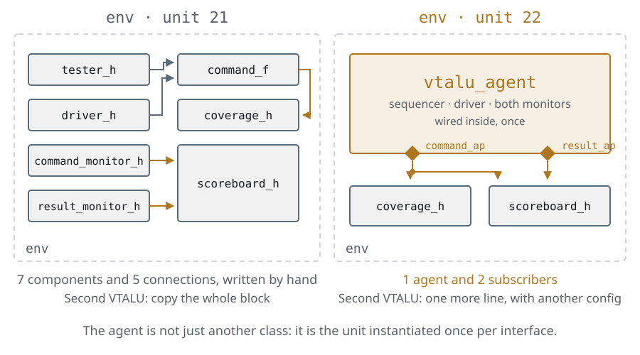
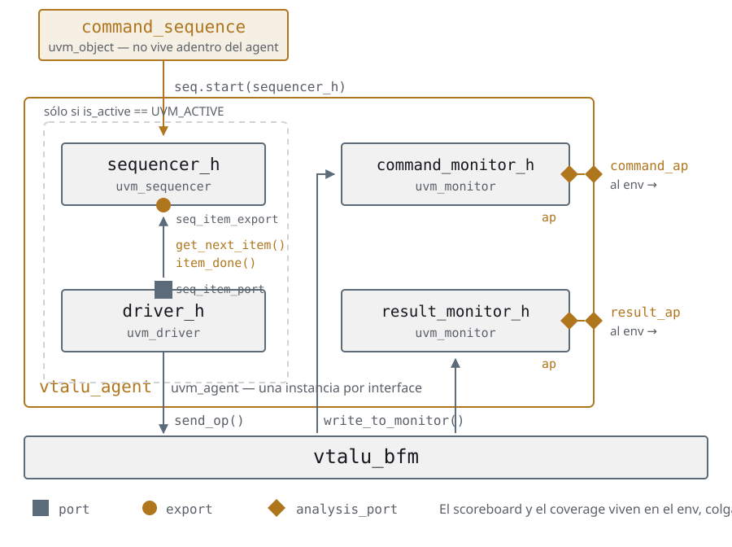
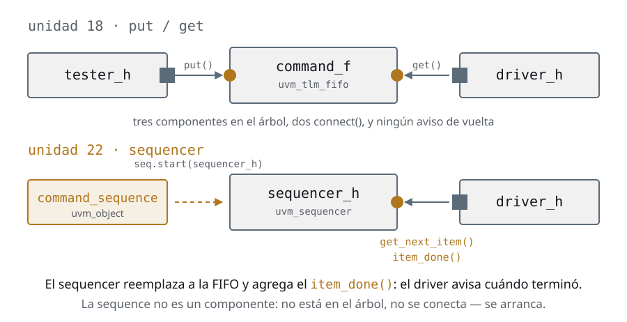
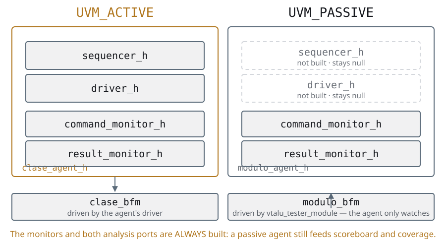
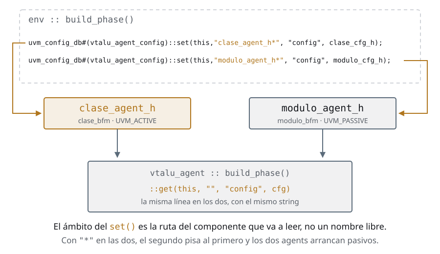
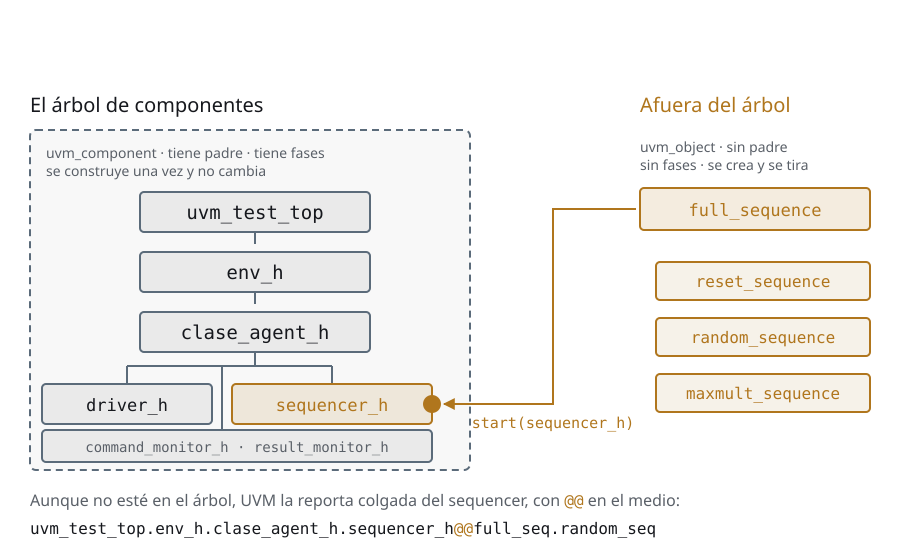
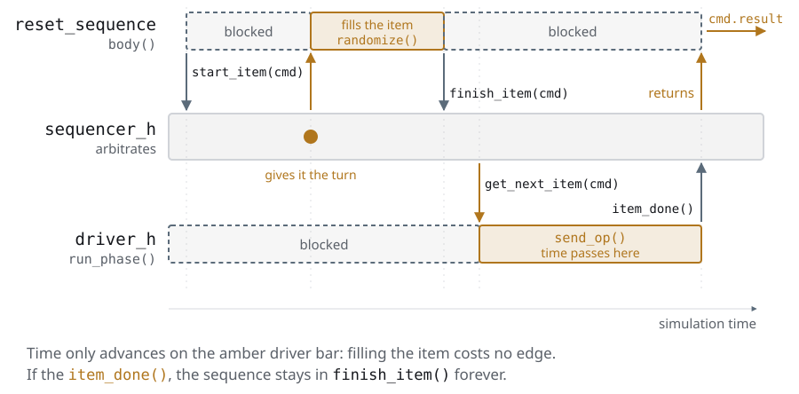
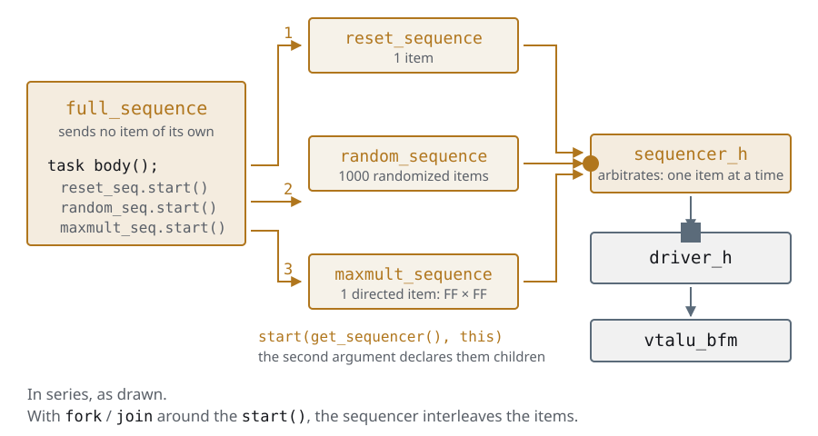
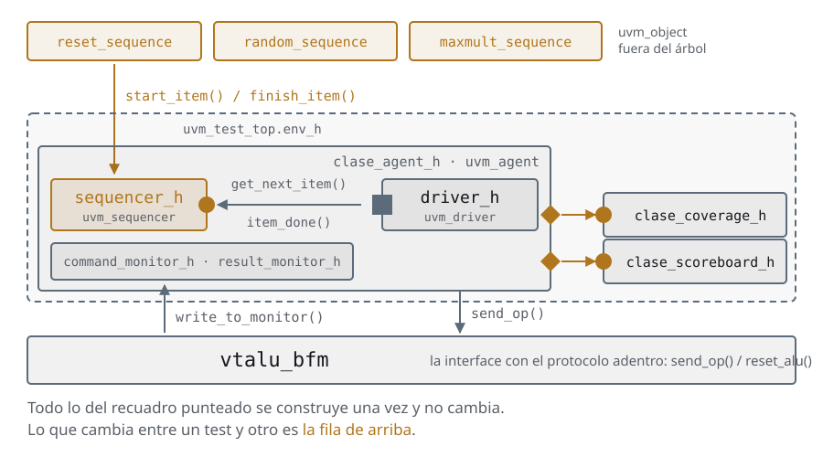

Día 6El testbench reutilizable
Las mismas slides del deck, con las notas del instructor adentro del texto y el código completo. Si estás haciendo el curso solo, empezá por acá y tené el deck al lado para los repasos.
Ayer quedó…
Dónde dejamos el testbench
- El dato es un objeto:
command_transactioncondo_copy,do_compareyconvert2string, y el scoreboard compara objetos, no campos - El estímulo se pide en vez de escribirse:
randomize(),constraint,dist, y el histograma que dice si la distribución hace lo que promete - Y quedan dos cosas pegadas que no van juntas: el
testeres estructura y estímulo a la vez, y elenvnombra al monitor y al driver de a uno
La recap del día 6 tiene que nombrar las dos separaciones que la unidad hace, porque son dos y se confunden: el agent separa la estructura y la sequence separa el estímulo. Las dos son la misma operación —sacar algo del árbol de componentes— aplicada a cosas distintas. El tercer bullet es el que hay que dejar dicho con las palabras del alumno: hoy, para probar tres estímulos y sus combinaciones, hacen falta seis clases de test. Eso crece factorial, y es el motivo de que exista la unidad.
Agenda
Día 6 · ≈ 4 h 15 · unidad 7 · el testbench reutilizable
- Agents
- Callbacks
- Sequences
Al final del día podés:
- Decir qué construye y qué no un agent con
is_active = UVM_PASSIVE - Explicar por qué una
uvm_sequenceno aparece enprint_topology() - Sacar la última línea cableada de un test, con
default_sequenceporuvm_config_db
Los dos primeros son las filas 13 y 14 de la autoevaluación del cierre. La 14 es
la pregunta que se tiró el día 3, cuando apareció el diagrama de clases de UVM,
y se contesta hoy: uvm_object son los datos y uvm_component es la
estructura.
El tercero es el que cierra la unidad y el día: cuando esa línea se va, ninguna
del test nombra un componente de adentro del env, y recién ahí el testbench es
reutilizable de verdad.
Agents
El problema: un testbench que no se puede copiar
- El
envque dejamos en las transactions funciona, pero es un bloque soldado: siete componentes y cincoconnect()escritos a mano - Cada uno de esos componentes existe por una sola razón: maneja o mira la
misma interface, la
vtalu_bfm - Preguntá qué pasa si el diseño trae dos VTALU: hay que copiar los siete objetos, las cinco conexiones, y renombrar todo
- Copiar y pegar estructura es exactamente lo que veníamos evitando desde el
env - UVM le pone nombre a la solución:
uvm_agent

La pregunta que ordena la sección entera: ¿cuál es la unidad natural de reuso en un testbench? No es el componente, y no es el env. Es la interface. Todo lo que sabe hablar un protocolo se empaqueta junto, y esa caja se instancia una vez por cada interface del diseño. Ese es el agent, y no es más que eso. Si el grupo viene de RTL, la analogía funciona sola: el agent es al testbench lo que un módulo parametrizable es al RTL. Nadie instancia una FIFO copiando sus registros de a uno.
Agents
Qué hay adentro de un agent
- Un
uvm_agentes unuvm_componentmás: mismo árbol, mismas fases, misma factory - Lo que cambia es qué mete adentro, siempre lo mismo:
- un sequencer, que entrega estímulo
- un driver, que lo convierte en señales de la BFM
- los monitores, que miran el bus y publican transactions
- Y expone hacia afuera dos
uvm_analysis_port: el que publica comandos y el que publica resultados - El scoreboard y la cobertura no van adentro: son análisis, y viven en el
envcolgados de esos dos puertos - Desde esta sección cada pieza usa su clase base:
uvm_driver #(T),uvm_sequencer #(T)yuvm_monitoren vez deuvm_componenta secas

Acá hay una decisión que conviene decir en voz alta porque el UVM Primer la
toma al revés: mete el scoreboard y el coverage adentro del agent. Nosotros no.
La razón es práctica: el día que ponés un agent pasivo sobre una interface que
maneja otro, no querés que aparezca un segundo scoreboard de regalo. El agent es
la capa de protocolo; el análisis es del env, que es el que sabe qué se está
verificando.
La otra razón es que si el scoreboard vive adentro, los dos analysis ports que
el agent expone no tienen a quién servir, y la mitad del diseño queda decorativa.
Sobre el último bullet, porque alguien va a abrir code/u7/agents y lo va a ver:
hasta las transactions los monitores extendían uvm_component; desde acá extienden
uvm_monitor. Y uvm_monitor no agrega ni una línea de comportamiento — es
uvm_component con otro nombre. Lo que agrega es intención: cualquiera que abra
el testbench sabe qué hace esa clase sin leerla, y print_topology() la muestra
como monitor.
Es la misma economía que uvm_env: la mitad del valor de UVM no está en el
código de la librería, está en que todos usan los mismos nombres para las mismas
cosas. uvm_driver y uvm_sequencer sí traen cosas —el seq_item_port y la
arbitración—; uvm_monitor, uvm_env y uvm_agent son casi puro vocabulario.
Agents
El salto: del tester a la sequence
- En los put y get ports partimos el estímulo en dos: el
testerelegía qué mandar, eldriversabía cómo - Los uníamos con
uvm_put_port/uvm_get_porty unauvm_tlm_fifoen el medio: tres componentes en el árbol y dosconnect() - UVM ya trae eso hecho, y con un nombre: el
uvm_sequencer - El
driverdeja de ser unuvm_componentgenérico y pasa a seruvm_driver #(T), que ya viene con unseq_item_port - Y el
testerdesaparece: lo reemplaza unauvm_sequence, que no es un componente — es un objeto, no está en el árbol y no se conecta

Éste es el salto que más cuesta del curso, y el motivo es que hay dos cambios en
la misma línea. Conviene separarlos.
Cambio uno, estructural: la FIFO se llama sequencer y viene con el driver.
Cambio dos, conceptual: el generador de estímulo deja de ser un componente.
Un componente se construye una vez en build_phase y vive toda la simulación;
una sequence se crea, corre, termina y se tira — y podés correr otra a
continuación sobre el mismo sequencer. Eso es lo que hace que un test pueda
combinar estímulos sin tocar la estructura, y de eso se trata la sección de
sequences.
La pregunta para tirar al grupo: ¿por qué el driver del agent pasivo no existe,
pero el monitor sí? Porque manejar es opcional, mirar no.
Agents
El handshake: get_next_item() / item_done()
- El driver ya no hace
get(): haceget_next_item(), que bloquea hasta que la sequence tenga algo - Cuando terminó de manejar las señales, llama a
item_done() - Esa segunda llamada es lo que el par
put/getno tenía: es el driver avisando "ya está, mandame el próximo" - Sin
item_done()la sequence se cuelga para siempre en sufinish_item(), y la simulación se queda sin avanzar sin un solo mensaje de error - El par siempre va completo, y en ese orden
code/u7/agents/tb_classes/driver.svh · #run_phase task run_phase(uvm_phase phase);
command_transaction command;
forever begin : command_loop
seq_item_port.get_next_item(command);
bfm.send_op(command.A, command.B, command.op);
seq_item_port.item_done();
end : command_loop
endtask : run_phaseel archivo entero, 27 líneas
class driver extends uvm_driver #(command_transaction);
`uvm_component_utils(driver)
virtual vtalu_bfm bfm;
function new(string name, uvm_component parent);
super.new(name, parent);
endfunction : new
function void build_phase(uvm_phase phase);
vtalu_agent_config cfg;
// The BFM is not asked for on its own: ask for the agent config, and it comes from there.
if (!uvm_config_db#(vtalu_agent_config)::get(this, "", "config", cfg))
`uvm_fatal("DRIVER", "Failed to get agent config")
bfm = cfg.bfm;
endfunction : build_phase
task run_phase(uvm_phase phase);
command_transaction command;
forever begin : command_loop
seq_item_port.get_next_item(command);
bfm.send_op(command.A, command.B, command.op);
seq_item_port.item_done();
end : command_loop
endtask : run_phase
endclass : driverEl olvido de item_done() es el error número uno de la primera semana, y el
síntoma es engañoso: no hay error, no hay warning, la simulación simplemente
deja de avanzar en el tiempo y el objection nunca se baja. Verilator no tiene
timeout por defecto: se queda girando hasta que lo matás.
El truco para acordarse: get_next_item / item_done es un préstamo, no
una copia. La sequence te presta el item y se queda esperando a que lo
devuelvas. put/get era una entrega: el tester soltaba el comando y seguía.
Y de ahí sale la otra diferencia útil: como la sequence sigue teniendo el
handle, el driver puede escribirle el resultado adentro y la sequence lo lee al
volver de finish_item(). Eso lo usa la sección de sequences.
Agents
El driver, ahora uvm_driver
uvm_driver #(command_transaction)trae elseq_item_portgratis: no se declara ni se instancia connew()- El
build_phaseya no busca la BFM directo en elconfig_db: se la pide al config del agent - El
run_phasees tres líneas: pedir el item,bfm.send_op(...), avisar que terminó. El driver no toca un cable - El protocolo sigue donde lo dejamos en interfaces y BFM: adentro de la BFM. Por eso el driver de un agent es tan corto, y por eso cambiar de protocolo no lo toca
code/u7/agents/tb_classes/driver.svhclass driver extends uvm_driver #(command_transaction);
`uvm_component_utils(driver)
virtual vtalu_bfm bfm;
function new(string name, uvm_component parent);
super.new(name, parent);
endfunction : new
function void build_phase(uvm_phase phase);
vtalu_agent_config cfg;
// The BFM is not asked for on its own: ask for the agent config, and it comes from there.
if (!uvm_config_db#(vtalu_agent_config)::get(this, "", "config", cfg))
`uvm_fatal("DRIVER", "Failed to get agent config")
bfm = cfg.bfm;
endfunction : build_phase
task run_phase(uvm_phase phase);
command_transaction command;
forever begin : command_loop
seq_item_port.get_next_item(command);
bfm.send_op(command.A, command.B, command.op);
seq_item_port.item_done();
end : command_loop
endtask : run_phase
endclass : driverConviene abrir el driver de los put y get ports al lado y contar líneas: son casi las
mismas. Lo único que cambió es de dónde sale el item —antes un uvm_get_port,
ahora el seq_item_port— y que hay un item_done() al final.
La pregunta que vale hacer: ¿por qué el driver es tan corto? Porque el protocolo
no está acá. Está en la BFM desde interfaces y BFM, y esta clase sólo traduce
transaction a llamada. Ése es el reparto de trabajo que hace que un agent de
AXI tenga el mismo driver de veinte líneas.
Y el corolario, que es el del apéndice del bus: cuando cambia el protocolo,
cambia la BFM y el monitor. El driver, el agent, el env y el test no se enteran.
Agents
El sequencer se declara con un typedef
uvm_sequenceres una clase paramétrica: se parametriza con el tipo de item que va a entregar- No hace falta extenderla para nada: se usa tal cual
- Un
typedefen el package le pone nombre corto, y ese nombre es el que usan el agent y elcreate()
typedef uvm_sequencer #(command_transaction) sequencer;
- La
command_transactionde las transactions ya extiendeuvm_sequence_item, así que no hay que tocarla: por eso elegimos esa clase base y nouvm_transaction - El
typedefva después del`includede la transaction y antes del driver y del agent
Éste es el momento en que se cobra la decisión de las transactions. Si aquel día la
transaction hubiera extendido uvm_transaction, hoy este typedef no compila:
uvm_sequencer #(T) exige que T derive de uvm_sequence_item.
Vale decirlo explícitamente: es la primera vez en el curso que una decisión de
una sección anterior habilita —o rompe— la siguiente. Eso es exactamente lo que
significa "código adaptable" y no es una frase de manual.
Y por si alguien lo intenta: extender uvm_sequencer para agregarle cosas es
casi siempre señal de que eso iba en la sequence. El sequencer es un árbitro, no
un lugar donde poner lógica.
Agents
La sequence mínima
- Una
uvm_sequence #(T)tiene una taskbody(): eso es todo lo que hay que escribir - Cada item va entre
start_item()yfinish_item() start_item()bloquea hasta que el sequencer nos da el turno;finish_item()bloquea hasta que el driver llamó aitem_done()- El
randomize()va entre los dos: así las constraints se resuelven en el momento en que el item se va a entregar, no antes - Ésta es la traducción directa del
testerde las transactions, y nada más que eso — la sección de sequences es sobre lo que se puede hacer acá adentro
code/u7/agents/tb_classes/command_sequence.svh · #class-and-bodyclass command_sequence extends uvm_sequence #(command_transaction);
`uvm_object_utils(command_sequence)
function new(string name = "command_sequence");
super.new(name);
endfunction : new
task body();
command_transaction command;
// All transactions come out of the factory, the directed ones too:
// a new() would skip add_test's set_type_override.
command = command_transaction::type_id::create("command");
start_item(command);
command.op = rst_op;
finish_item(command);
repeat (1000) begin : random_loop
command = command_transaction::type_id::create("command");
start_item(command);
// The randomize() goes BETWEEN start_item and finish_item: that way the
// constraints are solved when the item is about to be handed over, and
// not before. Today it makes no difference; the day a constraint
// depends on the DUT state, it will.
if (!command.randomize()) `uvm_fatal("COMMAND SEQ", "randomize() failed")
finish_item(command);
end : random_loop
// Directed: the multiplier overflow, which 1000 random operations might
// never touch. It comes out of the factory like the others, but since it
// is not randomized, add_transaction's constraint does not run.
command = command_transaction::type_id::create("command");
start_item(command);
command.op = mul_op;
command.A = 8'hFF;
command.B = 8'hFF;
finish_item(command);
endtask : bodyel archivo entero, 45 líneas
// The run_phase of the u6/transactions tester, turned into the body() of a sequence.
// Same stimulus, same count, same directed cases.
//
// What changed: it is no longer a uvm_component, it is not in the tree, it
// connects to nothing and it does not raise the objection -- the test that starts it does.
class command_sequence extends uvm_sequence #(command_transaction);
`uvm_object_utils(command_sequence)
function new(string name = "command_sequence");
super.new(name);
endfunction : new
task body();
command_transaction command;
// All transactions come out of the factory, the directed ones too:
// a new() would skip add_test's set_type_override.
command = command_transaction::type_id::create("command");
start_item(command);
command.op = rst_op;
finish_item(command);
repeat (1000) begin : random_loop
command = command_transaction::type_id::create("command");
start_item(command);
// The randomize() goes BETWEEN start_item and finish_item: that way the
// constraints are solved when the item is about to be handed over, and
// not before. Today it makes no difference; the day a constraint
// depends on the DUT state, it will.
if (!command.randomize()) `uvm_fatal("COMMAND SEQ", "randomize() failed")
finish_item(command);
end : random_loop
// Directed: the multiplier overflow, which 1000 random operations might
// never touch. It comes out of the factory like the others, but since it
// is not randomized, add_transaction's constraint does not run.
command = command_transaction::type_id::create("command");
start_item(command);
command.op = mul_op;
command.A = 8'hFF;
command.B = 8'hFF;
finish_item(command);
endtask : body
endclass : command_sequenceDos cosas que conviene marcar en el código, porque son las que se copian mal.
Primera: la transaction sale de type_id::create(), también la del reset y la
de la multiplicación dirigida. Es la misma regla de las transactions —la factory
sólo se entera de lo que pasa por create()— y acá vuelve a importar porque el
add_test sigue existiendo.
Segunda: randomize() entre start_item y finish_item no es un capricho de
estilo. Randomizar antes funciona igual hoy, pero rompe el día que una constraint
depende del estado del DUT o de la respuesta anterior: para ese momento el valor
ya estaba elegido. Randomizar tarde es la costumbre correcta y no cuesta nada
adoptarla desde el primer día.
Agents
is_active: activo y pasivo
uvm_agenttrae un campois_activede tipouvm_active_passive_enum, con dos valores:UVM_ACTIVEyUVM_PASSIVE- Activo: se construyen el sequencer y el driver. El agent maneja la interface
- Pasivo: no se construyen. El agent sólo mira una interface que maneja otro
- Los monitores y los dos analysis ports se construyen siempre: un agent pasivo sigue alimentando scoreboard y cobertura
- Se lee con
get_is_active()y se decide en elbuild_phase, con unif

La pregunta honesta es "¿y para qué quiero un agent que no maneja nada?". Tres respuestas de campo, en orden de frecuencia: Uno, interfaces de salida. Un puerto que el DUT maneja y vos sólo verificás no necesita driver, y el agent pasivo te da el monitor y la cobertura gratis. Dos, integración. Cuando el bloque que verificaste pasa a formar parte de un chip, la interface deja de ser tuya: la maneja el bloque de al lado. El mismo agent, con una línea distinta en el config, sigue sirviendo. Ese es el retorno real de haber armado un agent. Tres, lo del ejemplo: convivir con estímulo que no es tuyo — un módulo heredado, un modelo de referencia, un generador de otro equipo.
Agents
Y se puede ver
bash run.sh +TOPOLOGYimprime el árbol de componentes que UVM armó
clase_agent_h vtalu_agent
command_ap uvm_analysis_port
command_monitor_h command_monitor
driver_h driver
seq_item_port uvm_seq_item_pull_port
result_ap uvm_analysis_port
result_monitor_h result_monitor
sequencer_h uvm_sequencer
seq_item_export uvm_seq_item_pull_imp
modulo_agent_h vtalu_agent
command_ap uvm_analysis_port
command_monitor_h command_monitor
result_ap uvm_analysis_port
result_monitor_h result_monitor
- Misma clase, dos instancias, y una tiene cuatro componentes menos
- Ahí están también el
seq_item_porty elseq_item_exportque el driver y el sequencer traen puestos, sin que nadie los declare — contra los put y get ports, donde eluvm_put_porthabía que declararlo y hacerlenew() print_topology()es además la herramienta de debug cuando unconnect()apunta a un componente que no existe
Este árbol lo imprime la librería, no el curso, y ése es todo el punto: hasta acá
la jerarquía era un diagrama en una slide, y ahora es una salida que se puede
grepear. Vale correrlo en vivo — es el print_topology() de la sección de
reporting, ahora con algo que valga la pena mirar.
Las dos cosas que hay que hacer ver, una al lado de la otra: clase_agent_h
tiene driver_h y sequencer_h, y modulo_agent_h no. Ése es el
is_active en la práctica — el mismo tipo de clase, instanciado dos veces, y uno
construyó dos objetos menos. Los dos monitores están en los dos, porque mirar
nunca es opcional.
Y la que no está: no hay ninguna sequence en este árbol. Una sequence es un
uvm_object, no un uvm_component, así que no vive en la topología. Es la
pregunta que se tiró el día 3 con el diagrama de clases, y acá se puede contestar
señalando la pantalla.
Agents
El config object del agent
- El agent necesita dos datos de afuera: cuál BFM y si es activo
- Los dos viajan juntos en un objeto de configuración, que es la interface pública del agent
- Es una clase pelada, no un
uvm_object: por eso el constructor puede exigir los dos datos, y quien se olvide de uno no compila - Un
uvm_objectse crea contype_id::create(), que sólo toma unname: la garantía del constructor se pierde - El campo
is_activevaprotectedcon un getter: nadie lo cambia después de que el agent se construyó
code/u7/agents/tb_classes/vtalu_agent_config.svh// The agent config is NOT a uvm_object: it is a plain class. That is why the
// constructor can DEMAND both values, and whoever forgets one does not compile.
// A uvm_object is built with type_id::create(), which only takes a name, and
// that guarantee is lost.
class vtalu_agent_config;
virtual vtalu_bfm bfm;
// protected + getter: nobody changes it after the agent was built.
protected uvm_active_passive_enum is_active;
function new(virtual vtalu_bfm bfm, uvm_active_passive_enum is_active);
this.bfm = bfm;
this.is_active = is_active;
endfunction : new
function uvm_active_passive_enum get_is_active();
return is_active;
endfunction : get_is_active
endclass : vtalu_agent_configAcá el curso se aparta de la costumbre de la industria a propósito, y conviene
decirlo: la mayoría de los proyectos hace class agent_config extends uvm_object
y lo registra en la factory, para poder overridearlo. Es una decisión legítima y
tiene su razón. La contra es la que está en el bullet: se pierde el constructor
que obliga.
Lo que no es negociable es la idea de fondo, y es la que hay que dejar: cada
nivel de jerarquía recibe su configuración por un objeto. Si un componente
necesita cinco datos, no son cinco uvm_config_db::get() desparramados: es un
config. El día que agregás el sexto dato, tocás una clase y no seis.
Fijate que el driver y los dos monitores también piden el config, no la BFM: el
agent no reparte handles a mano.
Agents
La clase agent: build_phase
- Pide su config al
uvm_config_dby copia elis_activea mano: sinsuper.build_phase(), el deuvm_agentque lo leería no corre - Construye sequencer y driver sólo si es activo; los monitores y los dos analysis ports, siempre
- Los analysis ports son ports: se instancian con
new(), no con la factory
code/u7/agents/tb_classes/vtalu_agent.svh · #class-and-buildclass vtalu_agent extends uvm_agent;
`uvm_component_utils(vtalu_agent)
vtalu_agent_config cfg;
sequencer sequencer_h;
driver driver_h;
command_monitor command_monitor_h;
result_monitor result_monitor_h;
uvm_analysis_port #(command_transaction) command_ap;
uvm_analysis_port #(result_transaction) result_ap;
function new(string name, uvm_component parent);
super.new(name, parent);
endfunction : new
function void build_phase(uvm_phase phase);
if (!uvm_config_db#(vtalu_agent_config)::get(this, "", "config", cfg))
`uvm_fatal("AGENT", "Failed to get agent config")
is_active = cfg.get_is_active();
if (get_is_active() == UVM_ACTIVE) begin : estimulo
sequencer_h = sequencer::type_id::create("sequencer_h", this);
driver_h = driver::type_id::create("driver_h", this);
end : estimulo
command_monitor_h = command_monitor::type_id::create("command_monitor_h", this);
result_monitor_h = result_monitor::type_id::create("result_monitor_h", this);
command_ap = new("command_ap", this);
result_ap = new("result_ap", this);
endfunction : build_phaseel archivo entero, 43 líneas
class vtalu_agent extends uvm_agent;
`uvm_component_utils(vtalu_agent)
vtalu_agent_config cfg;
sequencer sequencer_h;
driver driver_h;
command_monitor command_monitor_h;
result_monitor result_monitor_h;
uvm_analysis_port #(command_transaction) command_ap;
uvm_analysis_port #(result_transaction) result_ap;
function new(string name, uvm_component parent);
super.new(name, parent);
endfunction : new
function void build_phase(uvm_phase phase);
if (!uvm_config_db#(vtalu_agent_config)::get(this, "", "config", cfg))
`uvm_fatal("AGENT", "Failed to get agent config")
is_active = cfg.get_is_active();
if (get_is_active() == UVM_ACTIVE) begin : estimulo
sequencer_h = sequencer::type_id::create("sequencer_h", this);
driver_h = driver::type_id::create("driver_h", this);
end : estimulo
command_monitor_h = command_monitor::type_id::create("command_monitor_h", this);
result_monitor_h = result_monitor::type_id::create("result_monitor_h", this);
command_ap = new("command_ap", this);
result_ap = new("result_ap", this);
endfunction : build_phase
function void connect_phase(uvm_phase phase);
if (get_is_active() == UVM_ACTIVE)
driver_h.seq_item_port.connect(sequencer_h.seq_item_export);
command_monitor_h.ap.connect(command_ap);
result_monitor_h.ap.connect(result_ap);
endfunction : connect_phase
endclass : vtalu_agentUn detalle que vale oro y que nadie cuenta: el build_phase de uvm_agent que
trae la librería lee solo el is_active del resource pool. Está en
code/.uvm/src/comps/uvm_agent.svh, se puede abrir en clase.
O sea que en un testbench que llama a super.build_phase(), un
uvm_config_db#(int)::set(this, "mi_agent", "is_active", UVM_PASSIVE) funciona
solo, sin config object. Como este vtalu_agent no lo llama, ese mecanismo
está apagado, y por eso lo asignamos a mano.
Y acá se cobra lo del día 3: uvm_agent y uvm_sequencer son las dos clases de
la librería que hacen trabajo real en su build_phase —uvm_agent lee el
is_active, y uvm_sequencer_param_base engancha el fifo de respuestas
(seq/uvm_sequencer_param_base.svh:288)—. Es exactamente el caso que la regla de
afuera cubre: si extendés una de las dos y escribís build_phase, el super es
obligatorio. Heredaste de una clase intermedia que hace trabajo real, y
saltearte el super lo apaga sin decir nada. Nosotros podemos
saltearlo porque escribimos la línea que reemplaza; el que no la escribe, no.
Las dos formas son válidas. Lo que no es válido es la mitad de cada una: poner
is_active en el config_db, no llamar a super.build_phase(), y después
preguntarse por qué el agent arranca activo. Pasa seguido.
Agents
La clase agent: connect_phase
- Adentro: el
seq_item_portdel driver contra elseq_item_exportdel sequencer — una sola línea, y sólo si es activo - Hacia afuera: el
apde cada monitor se conecta al analysis port del agent - Ese segundo
connect()es el que hace que el agent sea una caja cerrada: elenvnunca tocacommand_monitor_h, habla concommand_ap - Sigue valiendo el mantra ports connect to exports, con una vuelta más: un
port también se conecta a otro port del mismo tipo, hacia afuera. Eso es
command_monitor_h.ap.connect(command_ap), y se llama port forwarding
El port forwarding es lo que confunde, y conviene decir por qué existe antes de
cómo se escribe. El agent quiere ofrecer hacia afuera un dato que produce un hijo
suyo. Podría exponer el hijo —el env mirando agent.command_monitor_h.ap— y
ahí se termina la encapsulación: el día que el monitor cambie de nombre, se rompe
el env.
La salida es que el agent tenga su propio analysis port y lo enchufe al del
monitor. Desde afuera se ve un solo port, command_ap, y adentro puede haber lo
que sea. Es exactamente lo que hace un módulo cuando conecta un puerto suyo al de
un submódulo — la misma idea, con clases.
El detalle que parece romper el mantra: acá un port se conecta a otro port, no
a un export. No es una excepción caprichosa — la dirección sigue siendo la misma,
del que llama al que implementa; lo único que pasa es que el agent está en el
medio y no implementa nada, sólo reenvía.
Agents
Cómo queda el env
- Cuatro líneas de estructura en vez de siete objetos y cinco conexiones
- El
envya no sabe que existe un driver, ni un sequencer, ni una FIFO: sabe que hay un agent y que tiene dos analysis ports - El scoreboard y la cobertura quedan igual que en los analysis ports: son subscribers, y no se enteran de nada
code/u7/agents/env_un_agent.svh · #class-and-buildclass env extends uvm_env;
`uvm_component_utils(env)
vtalu_agent agent_h;
vtalu_agent_config agent_cfg_h;
scoreboard scoreboard_h;
coverage coverage_h;
function new(string name, uvm_component parent);
super.new(name, parent);
endfunction : new
function void build_phase(uvm_phase phase);
virtual vtalu_bfm bfm;
if (!uvm_config_db#(virtual vtalu_bfm)::get(this, "", "bfm", bfm))
`uvm_fatal("ENV", "Failed to get BFM")
agent_cfg_h = new(.bfm(bfm), .is_active(UVM_ACTIVE));
uvm_config_db#(vtalu_agent_config)::set(this, "agent_h*", "config", agent_cfg_h);
agent_h = vtalu_agent::type_id::create("agent_h", this);
scoreboard_h = scoreboard::type_id::create("scoreboard_h", this);
coverage_h = coverage::type_id::create("coverage_h", this);
endfunction : build_phase
function void connect_phase(uvm_phase phase);
agent_h.command_ap.connect(scoreboard_h.cmd_f.analysis_export);
agent_h.command_ap.connect(coverage_h.analysis_export);
agent_h.result_ap.connect(scoreboard_h.analysis_export);
endfunction : connect_phaseel archivo entero, 36 líneas
// ILLUSTRATION -- not compiled. The env of a SINGLE VTALU, to compare against
// the env.svh of the Transactions section.
class env extends uvm_env;
`uvm_component_utils(env)
vtalu_agent agent_h;
vtalu_agent_config agent_cfg_h;
scoreboard scoreboard_h;
coverage coverage_h;
function new(string name, uvm_component parent);
super.new(name, parent);
endfunction : new
function void build_phase(uvm_phase phase);
virtual vtalu_bfm bfm;
if (!uvm_config_db#(virtual vtalu_bfm)::get(this, "", "bfm", bfm))
`uvm_fatal("ENV", "Failed to get BFM")
agent_cfg_h = new(.bfm(bfm), .is_active(UVM_ACTIVE));
uvm_config_db#(vtalu_agent_config)::set(this, "agent_h*", "config", agent_cfg_h);
agent_h = vtalu_agent::type_id::create("agent_h", this);
scoreboard_h = scoreboard::type_id::create("scoreboard_h", this);
coverage_h = coverage::type_id::create("coverage_h", this);
endfunction : build_phase
function void connect_phase(uvm_phase phase);
agent_h.command_ap.connect(scoreboard_h.cmd_f.analysis_export);
agent_h.command_ap.connect(coverage_h.analysis_export);
agent_h.result_ap.connect(scoreboard_h.analysis_export);
endfunction : connect_phase
endclass : env- Ese es el
envde una sola VTALU. Con dos, cambia menos de lo que parece
Ésta es la slide para hacer la comparación en vivo: abrir el env.svh de transactions
al lado. La diferencia no es que sea más corto —que también—, es qué
desapareció: el env de transactions nombraba command_f, o sea que conocía el
mecanismo interno de cómo el estímulo llegaba al driver. El de acá no lo
nombra. Eso es encapsulamiento medido de forma objetiva: contá los nombres que
la clase de arriba tiene que conocer.
Si el grupo viene bien de tiempo, vale la pena la pregunta: ¿qué habría que
cambiar en este env para pasar de una FIFO a un sequencer? Nada. Ya está
adentro del agent.
Agents
Dos agents, un solo string
- Los dos agents ejecutan la misma línea:
uvm_config_db#(vtalu_agent_config)::get(this, "", "config", cfg) - Y sin embargo tienen que recibir objetos distintos
- Lo resuelve el segundo argumento del
set(): el ámbito, que es la ruta del componente que va a leer "clase_agent_h*"alcanza a ese agent y a todo lo que cuelga de él — por eso el driver y los monitores encuentran el mismo config sin que nadie se lo pase- El
thisdelset()es el punto de partida de esa ruta: elenv

Acá está la trampa clásica de la sección, y es de las que no fallan. Con un solo
agent, todo el mundo escribe "*" en el ámbito y funciona. El día que aparece el
segundo, el segundo set() pisa al primero y los dos agents reciben el mismo
config: el mismo BFM y el mismo is_active. Con el orden de env.svh —la clase
primero y el módulo después— el que queda es el pasivo, así que los dos arrancan
pasivos, sin driver ni sequencer, y el seq.start() del test cae sobre un
handle null. Invertido el orden serían dos drivers, pero manejando la misma
interface. Lo invariante, y lo que hay que llevarse: gana el último set(), y los
dos agents quedan iguales. El error no aparece en build_phase.
El asterisco importa: "clase_agent_h*" con asterisco alcanza a los hijos;
"clase_agent_h" sin asterisco, sólo al agent. Si lo escribís sin asterisco, el
agent encuentra su config y el driver no — uvm_fatal en build_phase, que al
menos es un error honesto.
Regla corta para llevarse: el ámbito del set() es una ruta, no una etiqueta.
Agents
Cuando el config_db no encuentra: +UVM_CONFIG_DB_TRACE
$ bash run.sh +UVM_CONFIG_DB_TRACE
UVM_INFO ... Configuration 'config' (type vtalu_agent_config) set by env_h
UVM_INFO ... Configuration 'config' read by
accessor=uvm_test_top.env_h.clase_agent_h.driver_h
UVM_INFO ... Configuration 'config' read by
accessor=uvm_test_top.env_h.modulo_agent_h.command_monitor_h
- El
config_dbes una base de datos por strings: cuando falla, falla en silencio o con unuvm_fatalque no dice por qué +UVM_CONFIG_DB_TRACEhace que UVM imprima cadaset()y cadaget(), con la ruta jerárquica completa del componente que lo pidió- Sirve para las dos preguntas que uno se hace: ¿el
set()llegó a este componente? y ¿qué componentes existen de verdad? - Es un plusarg, no código: no hay que tocar ni recompilar nada
Ésta es la herramienta que le faltaba a los tests, cuando dijimos que
get(null, "*", ...) "no falla: miente". Con el trace prendido, mentir se hace
difícil: se ve quién puso qué y quién lo leyó.
El uso que casi nadie descubre solo es el segundo: como cada get() imprime la
ruta del componente que lo llamó, la salida es un censo del árbol escrito por la
librería. Si un componente no aparece, no se construyó. El ejercicio del día
usa exactamente eso para corregirse, y por eso no puede hacerse trampa: el
alumno no escribe esas líneas.
Pariente cercano que vale nombrar: +UVM_OBJECTION_TRACE, para el otro cuelgue
clásico —la simulación que no termina porque alguien no bajó su objection—.
Agents
El ejemplo: dos VTALU y el módulo heredado
- El caso que justifica todo esto: hay que comparar dos fuentes de estímulo sobre el mismo diseño
- El
topinstancia dos VTALU y dosvtalu_bfm - La primera la maneja nuestro agent, en
UVM_ACTIVE - La segunda la maneja
vtalu_tester_module, un módulo de siempre sin una línea de UVM, y le colgamos un agent enUVM_PASSIVEpara mirarlo - Dos scoreboards y dos coberturas: eso es lo que responde cuál de los dos estímulos cubre más
code/u7/agents/top.sv · #topmodule top;
import uvm_pkg::*;
import vtalu_pkg::*;
`include "vtalu_macros.svh"
`include "uvm_macros.svh"
// The VTALU driven by the class testbench
vtalu_bfm clase_bfm ();
vtalu clase_dut (
.A(clase_bfm.A), .B(clase_bfm.B), .op(clase_bfm.op_set),
.clk(clase_bfm.clk), .reset_n(clase_bfm.reset_n), .start(clase_bfm.start),
.done(clase_bfm.done),
.ovf(clase_bfm.ovf), .result(clase_bfm.result)
);
// The VTALU driven by the legacy module
vtalu_bfm modulo_bfm ();
vtalu modulo_dut (
.A(modulo_bfm.A), .B(modulo_bfm.B), .op(modulo_bfm.op_set),
.clk(modulo_bfm.clk), .reset_n(modulo_bfm.reset_n), .start(modulo_bfm.start),
.done(modulo_bfm.done),
.ovf(modulo_bfm.ovf), .result(modulo_bfm.result)
);
vtalu_tester_module stim_module (modulo_bfm);
initial begin
// The top knows nothing about agents: it leaves the two interfaces with a
// name and walks away. Handing them out is the test's job.
uvm_config_db#(virtual vtalu_bfm)::set(null, "*", "clase_bfm", clase_bfm);
uvm_config_db#(virtual vtalu_bfm)::set(null, "*", "modulo_bfm", modulo_bfm);
run_test();
end
endmodule : topel archivo entero, 35 líneas
module top;
import uvm_pkg::*;
import vtalu_pkg::*;
`include "vtalu_macros.svh"
`include "uvm_macros.svh"
// The VTALU driven by the class testbench
vtalu_bfm clase_bfm ();
vtalu clase_dut (
.A(clase_bfm.A), .B(clase_bfm.B), .op(clase_bfm.op_set),
.clk(clase_bfm.clk), .reset_n(clase_bfm.reset_n), .start(clase_bfm.start),
.done(clase_bfm.done),
.ovf(clase_bfm.ovf), .result(clase_bfm.result)
);
// The VTALU driven by the legacy module
vtalu_bfm modulo_bfm ();
vtalu modulo_dut (
.A(modulo_bfm.A), .B(modulo_bfm.B), .op(modulo_bfm.op_set),
.clk(modulo_bfm.clk), .reset_n(modulo_bfm.reset_n), .start(modulo_bfm.start),
.done(modulo_bfm.done),
.ovf(modulo_bfm.ovf), .result(modulo_bfm.result)
);
vtalu_tester_module stim_module (modulo_bfm);
initial begin
// The top knows nothing about agents: it leaves the two interfaces with a
// name and walks away. Handing them out is the test's job.
uvm_config_db#(virtual vtalu_bfm)::set(null, "*", "clase_bfm", clase_bfm);
uvm_config_db#(virtual vtalu_bfm)::set(null, "*", "modulo_bfm", modulo_bfm);
run_test();
end
endmodule : top- El módulo llama a la misma
bfm.send_op()que el driver: recibe la interface por su puerto en vez de por una virtual interface, pero el protocolo que ejecuta es exactamente el mismo código - Eso es lo que hace justa la comparación: los dos estímulos hablan idéntico con el DUT. Lo único que se compara es qué manda cada uno, no cómo
Este top.sv es el que cierra el argumento de la sección, y conviene leerlo
buscando lo que no cambió: hay dos VTALU, dos interfaces, dos config_db
distintos, y el vtalu_tester_module sigue siendo el mismo módulo de Verilog de
siempre. Nadie lo tocó para que conviva con UVM.
Ése es el escenario real que la sección viene a resolver, y vale nombrarlo así:
llegás a un proyecto donde ya hay un estímulo escrito en Verilog que funciona y
nadie va a reescribir. Con un agent pasivo lo podés mirar —scoreboard,
cobertura, assertions— sin pedirle permiso a nadie ni tocar una línea suya.
El detalle técnico que hace justa la comparación, y que hay que señalar con el
dedo: el módulo llama a la misma bfm.send_op() que el driver. Recibe la
interface por puerto en vez de por virtual interface, pero el protocolo es el
mismo código. Si cada uno manejara el bus a su manera, comparar coberturas no
querría decir nada.
Agents
El test, y lo que todavía falta
- El
testsaca las dos BFM delconfig_db, arma elenv_configy lo baja - Después arranca la sequence a mano, sobre el sequencer del agent activo:
seq = command_sequence::type_id::create("seq");
seq.start(env_h.clase_agent_h.sequencer_h);
- Funciona, pero mirá lo que hace esa línea: el test atraviesa la jerarquía para llegar al sequencer, y con eso vuelve a conocer el interior del env
- Todo lo que acabamos de encapsular se filtra en una línea
- La sección de sequences lo arregla: la sequence se le pasa al sequencer por
config_db, y el test deja de saber dónde está
code/u7/agents/tb_classes/dual_test.svh · #build-and-run function void build_phase(uvm_phase phase);
virtual vtalu_bfm clase_bfm, modulo_bfm;
env_config env_config_h;
// The top left the two interfaces loose; the test packs them up.
if (!uvm_config_db#(virtual vtalu_bfm)::get(this, "", "clase_bfm", clase_bfm))
`uvm_fatal("DUAL TEST", "Failed to get clase_bfm")
if (!uvm_config_db#(virtual vtalu_bfm)::get(this, "", "modulo_bfm", modulo_bfm))
`uvm_fatal("DUAL TEST", "Failed to get modulo_bfm")
env_config_h = new(.clase_bfm(clase_bfm), .modulo_bfm(modulo_bfm));
uvm_config_db#(env_config)::set(this, "env_h*", "config", env_config_h);
env_h = env::type_id::create("env_h", this);
endfunction : build_phase
// +TOPOLOGY prints the component tree. It is how to SEE that the passive
// agent built neither a sequencer nor a driver.
function void end_of_elaboration_phase(uvm_phase phase);
if ($test$plusargs("TOPOLOGY")) uvm_root::get().print_topology();
endfunction : end_of_elaboration_phase
task run_phase(uvm_phase phase);
command_sequence seq;
phase.raise_objection(this);
// The only thing left wired by hand: the test reaches across the
// hierarchy to get to the sequencer. The sequences section takes it out of here.
seq = command_sequence::type_id::create("seq");
seq.start(env_h.clase_agent_h.sequencer_h);
#500;
phase.drop_objection(this);
endtask : run_phaseel archivo entero, 46 líneas
class dual_test extends uvm_test;
`uvm_component_utils(dual_test);
env env_h;
function new(string name, uvm_component parent);
super.new(name, parent);
endfunction : new
function void build_phase(uvm_phase phase);
virtual vtalu_bfm clase_bfm, modulo_bfm;
env_config env_config_h;
// The top left the two interfaces loose; the test packs them up.
if (!uvm_config_db#(virtual vtalu_bfm)::get(this, "", "clase_bfm", clase_bfm))
`uvm_fatal("DUAL TEST", "Failed to get clase_bfm")
if (!uvm_config_db#(virtual vtalu_bfm)::get(this, "", "modulo_bfm", modulo_bfm))
`uvm_fatal("DUAL TEST", "Failed to get modulo_bfm")
env_config_h = new(.clase_bfm(clase_bfm), .modulo_bfm(modulo_bfm));
uvm_config_db#(env_config)::set(this, "env_h*", "config", env_config_h);
env_h = env::type_id::create("env_h", this);
endfunction : build_phase
// +TOPOLOGY prints the component tree. It is how to SEE that the passive
// agent built neither a sequencer nor a driver.
function void end_of_elaboration_phase(uvm_phase phase);
if ($test$plusargs("TOPOLOGY")) uvm_root::get().print_topology();
endfunction : end_of_elaboration_phase
task run_phase(uvm_phase phase);
command_sequence seq;
phase.raise_objection(this);
// The only thing left wired by hand: the test reaches across the
// hierarchy to get to the sequencer. The sequences section takes it out of here.
seq = command_sequence::type_id::create("seq");
seq.start(env_h.clase_agent_h.sequencer_h);
#500;
phase.drop_objection(this);
endtask : run_phase
endclass : dual_testÉsta es la slide con la que conviene cerrar el día si el tiempo no da para el
resumen: deja una pregunta abierta y una promesa concreta.
Y es honesta: seq.start(env_h.clase_agent_h.sequencer_h) es código real que
funciona y que se ve en muchos testbenches. No está "mal". Simplemente es la
última cosa del testbench que sigue estando cableada, y es la que la sección
que viene se lleva puesta.
Si alguien pregunta por qué no lo hacemos bien de una: porque para entender el
default_sequence primero hay que haber sufrido escribir el start() a mano.
Agents
Lo que esta sección hace distinto
- El libro no usa sequencer acá. En The UVM Primer el agent de esta
sección todavía tiene el
testery lauvm_tlm_fifoadentro, y el sequencer recién aparece con las sequences — donde además eltesterdesaparece - Nosotros armamos el agent completo de una: es la forma en que se escribe hoy, y hace que la sección de sequences sea sólo sobre sequences
- El scoreboard y la cobertura quedan afuera del agent, contra lo que hace el UVM Primer. Un agent pasivo no debería arrastrar un scoreboard
- El config del agent no es un
uvm_object: es una clase pelada, para que el constructor obligue. La industria suele hacerlouvm_object - El protocolo vive en la BFM, igual que en el UVM Primer. Hasta Verilator 5.051 esto no
se podía: una task de interface llamada por una virtual interface no
propagaba. Se arregló en 5.052 —
docs/verilator.md
Que el material diga en qué se aparta de sus fuentes no es un detalle de
prolijidad: es lo que le permite al alumno leer el UVM Primer después sin
creer que uno de los dos está roto.
Y de paso deja la lección que más se usa en el trabajo: la estructura de un
testbench UVM no la fija el estándar, la fija la costumbre. IEEE 1800.2 no dice
en ningún lado que el scoreboard vaya en el env. Dice qué es un uvm_agent y
nada más. Todo lo demás es convención — buena, pero convención.
Agents
Resumen de la unidad
- Un agent empaqueta todo lo que sabe hablar una interface: sequencer, driver y monitores, cableados adentro una sola vez
- Se instancia una vez por interface, y se configura con un objeto de configuración, no con handles sueltos
is_activedecide si además de mirar, maneja- El
envpasó de siete componentes cableados a mano a un agent y dos subscribers - El
uvm_config_dbdeja de ser un buzón global: el ámbito es una ruta en el árbol, y con más de un agent es lo que hace que cada uno reciba lo suyo - Quedó una sola cosa cableada: el test todavía busca el sequencer a mano para arrancar la sequence. Eso es la sección de sequences
Cierre de la sección y del salto más grande del curso. Vale decir dónde quedaron parados: con lo de hoy, el alumno puede leer el testbench de cualquier proyecto UVM y reconocer la estructura. Agent por interface, config por nivel, análisis en el env. Es literalmente el 80 % de lo que va a ver el primer día. Lo que falta —sequences— es lo que va a escribir el primer día. Por eso van juntas en el mismo día y en este orden: primero la casa, después lo que pasa adentro.
Callbacks
El tercer gancho
- El día 1 prometimos tres formas de escribir un test nuevo sin tocar el env: constraints, factory override y callbacks. Van dos
- Las tres son la misma idea a distinta altura: la constraint cambia valores, el override cambia una clase entera, el callback cambia qué hace una clase en un punto
- El caso que las separa: te dan un agent de VIP —de otro equipo, o comprado— y necesitás que el driver mande un dato roto una vez cada tanto
- Con override tenés que reescribir el driver entero para cambiar una línea. Con un callback enganchás esa línea y nada más
- Y hay una diferencia que no es de estilo: los callbacks se apilan. El override elige una clase; los callbacks corren todos, en orden
Esta media sección existe porque la unidad 1 promete tres ganchos, y sin ella el curso entrega dos. Quince minutos alcanzan: la mecánica es chica y lo que hay que dejar es el criterio de cuándo se usa. El criterio, dicho en una línea: override cuando cambia el qué, callback cuando cambia el cuándo. Si la clase nueva es distinta de la vieja en varios métodos, es un override. Si es la misma clase con un agregado en un punto, es un callback — y sobre todo si la clase original no es tuya y no la podés tocar. La palabra clave de todo esto es VIP. En un proyecto real la mitad de los agents vienen de afuera, con su licencia y su soporte, y editarlos no es una opción: la próxima versión te pisa el cambio. El callback es el punto de extensión que el que escribió el VIP dejó a propósito. Y el que apilen es lo que hace que dos ingenieros puedan enganchar cosas distintas en el mismo driver sin pisarse. Con overrides, el segundo gana.
Callbacks
El gancho: una clase, un método virtual vacío
code/u7/callbacks/tb_classes/driver_callback.svh · #driver_callbackclass driver_callback extends uvm_callback;
`uvm_object_utils(driver_callback)
function new(string name = "driver_callback");
super.new(name);
endfunction : new
// A task, not a function: a callback that only edits the transaction could
// be a function, but one that adds delay needs to consume time. Making the
// hook a task costs nothing and leaves both open.
virtual task pre_send(driver drv, command_transaction cmd);
endtask : pre_send
endclass : driver_callbackel archivo entero, 68 líneas
// The hook itself. A callback is NOT a component: it does not live in the tree
// and it has no phases. It is an object that hangs off a component, and the
// component decides where -- and whether -- it gets called.
//
// The base class is empty on purpose: a testbench with no callbacks registered
// runs exactly as it did before, at the cost of one empty virtual call.
typedef class driver;
class driver_callback extends uvm_callback;
`uvm_object_utils(driver_callback)
function new(string name = "driver_callback");
super.new(name);
endfunction : new
// A task, not a function: a callback that only edits the transaction could
// be a function, but one that adds delay needs to consume time. Making the
// hook a task costs nothing and leaves both open.
virtual task pre_send(driver drv, command_transaction cmd);
endtask : pre_send
endclass : driver_callback
// --------------------------------------------------------------------------
// Error injection: flip one bit of A, once every `cada` transactions.
//
// This is the classic use -- and the reason it is worth showing is what it does
// NOT do to the scoreboard. See run.sh.
class flip_bit_cb extends driver_callback;
`uvm_object_utils(flip_bit_cb)
int unsigned cada = 8; // one out of every N
int unsigned vistas;
function new(string name = "flip_bit_cb");
super.new(name);
endfunction : new
virtual task pre_send(driver drv, command_transaction cmd);
vistas++;
if (vistas % cada != 0) return;
`uvm_info("FLIP_BIT_CB", $sformatf("A: %02h -> %02h", cmd.A, cmd.A ^ 8'h01),
UVM_MEDIUM)
cmd.A ^= 8'h01;
endtask : pre_send
endclass : flip_bit_cb
// --------------------------------------------------------------------------
// Timing injection: hold the bus idle for a couple of clocks before driving.
//
// It is here to make one point that the factory cannot make: callbacks STACK.
// Both of these are registered on the same driver, and both run, in the order
// they were added. A factory override picks one class and only one.
class jitter_cb extends driver_callback;
`uvm_object_utils(jitter_cb)
int unsigned ciclos = 2;
function new(string name = "jitter_cb");
super.new(name);
endfunction : new
virtual task pre_send(driver drv, command_transaction cmd);
repeat (ciclos) @(posedge drv.bfm.clk);
endtask : pre_send
endclass : jitter_cb- Un
uvm_callbackno es un component: no está en el árbol, no tiene fases y no aparece enprint_topology()— igual que una sequence - El método base está vacío a propósito: sin nadie registrado, el testbench corre exactamente como antes
- Es una
tasky no unafunctionporque un callback de delay tiene que poder consumir tiempo. Uno que sólo edita la transaction podría ser función
Vale detenerse en que es una clase normal, que extiende uvm_callback, que
extiende uvm_object. No hay magia: lo único que hace uvm_callback es darle
un lugar en el pool que UVM mantiene por instancia de componente.
El typedef class driver; de arriba del archivo es la parte aburrida y
necesaria: el callback recibe el driver, y el driver registra el callback, así
que uno de los dos tiene que declararse adelantado. En un testbench de verdad
esto vive en su propio archivo por eso mismo.
Si alguien pregunta por qué el método base está vacío en vez de ser abstracto:
porque uvm_do_callbacks recorre la cola entera, y una cola vacía tiene que
ser legal. La clase base vacía es la que hace que "sin callbacks" sea el caso
normal y no una excepción.
Callbacks
Dos líneas en el driver, y ninguna más
code/u7/callbacks/tb_classes/driver.svh · #register-cbclass driver extends uvm_driver #(command_transaction);
`uvm_component_utils(driver)
// Declares "this component accepts callbacks of this type". Without it the
// add() below still hooks up and the callback still runs, but with a CBUNREG
// warning and without the type check: outside the contract, and nearly silent.
`uvm_register_cb(driver, driver_callback)
virtual vtalu_bfm bfm;el archivo entero, 35 líneas
// The Agents driver with the hook added. Diff against ../agents/tb_classes:
// two lines -- `uvm_register_cb and `uvm_do_callbacks. Nothing else moves.
class driver extends uvm_driver #(command_transaction);
`uvm_component_utils(driver)
// Declares "this component accepts callbacks of this type". Without it the
// add() below still hooks up and the callback still runs, but with a CBUNREG
// warning and without the type check: outside the contract, and nearly silent.
`uvm_register_cb(driver, driver_callback)
virtual vtalu_bfm bfm;
function new(string name, uvm_component parent);
super.new(name, parent);
endfunction : new
function void build_phase(uvm_phase phase);
vtalu_agent_config cfg;
if (!uvm_config_db#(vtalu_agent_config)::get(this, "", "config", cfg))
`uvm_fatal("DRIVER", "Failed to get agent config")
bfm = cfg.bfm;
endfunction : build_phase
task run_phase(uvm_phase phase);
command_transaction command;
forever begin : command_loop
seq_item_port.get_next_item(command);
// Every callback registered on this driver, in the order they were
// added. With none registered this is a loop over an empty queue.
`uvm_do_callbacks(driver, driver_callback, pre_send(this, command))
bfm.send_op(command.A, command.B, command.op);
seq_item_port.item_done();
end : command_loop
endtask : run_phase
endclass : drivercode/u7/callbacks/tb_classes/driver.svh · #run_phase task run_phase(uvm_phase phase);
command_transaction command;
forever begin : command_loop
seq_item_port.get_next_item(command);
// Every callback registered on this driver, in the order they were
// added. With none registered this is a loop over an empty queue.
`uvm_do_callbacks(driver, driver_callback, pre_send(this, command))
bfm.send_op(command.A, command.B, command.op);
seq_item_port.item_done();
end : command_loop
endtask : run_phaseel archivo entero, 35 líneas
// The Agents driver with the hook added. Diff against ../agents/tb_classes:
// two lines -- `uvm_register_cb and `uvm_do_callbacks. Nothing else moves.
class driver extends uvm_driver #(command_transaction);
`uvm_component_utils(driver)
// Declares "this component accepts callbacks of this type". Without it the
// add() below still hooks up and the callback still runs, but with a CBUNREG
// warning and without the type check: outside the contract, and nearly silent.
`uvm_register_cb(driver, driver_callback)
virtual vtalu_bfm bfm;
function new(string name, uvm_component parent);
super.new(name, parent);
endfunction : new
function void build_phase(uvm_phase phase);
vtalu_agent_config cfg;
if (!uvm_config_db#(vtalu_agent_config)::get(this, "", "config", cfg))
`uvm_fatal("DRIVER", "Failed to get agent config")
bfm = cfg.bfm;
endfunction : build_phase
task run_phase(uvm_phase phase);
command_transaction command;
forever begin : command_loop
seq_item_port.get_next_item(command);
// Every callback registered on this driver, in the order they were
// added. With none registered this is a loop over an empty queue.
`uvm_do_callbacks(driver, driver_callback, pre_send(this, command))
bfm.send_op(command.A, command.B, command.op);
seq_item_port.item_done();
end : command_loop
endtask : run_phase
endclass : driver`uvm_register_cbdeclara el par tipo/callback. Sin él eladd()engancha igual y el callback **corre** — con unUVM_WARNING CBUNREGperdido en el log, y sin el chequeo de tipos ni eladd_by_name`uvm_do_callbackses el punto de extensión: recorre la cola de esa instancia de driver, en orden
El diff contra el driver de la sección Agents es exactamente de dos líneas, y
conviene mostrarlo con diff en vivo: diff code/u7/agents/tb_classes/driver.svh code/u7/callbacks/tb_classes/driver.svh. Todo lo demás —el get_next_item, el
send_op, el item_done— está igual.
El modo de falla del uvm_register_cb que falta no es el que uno espera, y vale
contarlo con la fuente en la mano porque la mitad de los tutoriales lo dice al
revés: uvm_callback.svh:744 reporta un UVM_WARNING CBUNREG y sigue de
largo — el add() mete el callback en m_base_inst.m_pool igual (:777-783),
y `uvm_do_callbacks lee ese pool sin consultar el registro (:964-1006).
O sea: sin la macro el callback corre, y lo que perdés es el chequeo de tipos y
el add_by_name por tipo derivado. Es peor que un error: es un warning entre mil
líneas, y el testbench queda fuera del contrato sin que se note.
Por eso el run.sh del ejemplo no chequea la macro sino el efecto: cuenta cuántas
veces se ejecutó el callback y falla si es cero. Un ejemplo que "pasa" sin haber
inyectado nada no prueba nada, venga de donde venga el desenganche.
Dónde poner el `uvm_do_callbacks es la decisión de diseño real, y es la
misma que toma el que escribe un VIP: cada punto de gancho es una promesa de
compatibilidad hacia adelante. Por eso los VIP tienen tres o cuatro, no treinta.
Callbacks
Ponerlos: el test, y nada más que el test
code/u7/callbacks/tb_classes/inject_test.svh · #hooking-the-cb function void end_of_elaboration_phase(uvm_phase phase);
super.end_of_elaboration_phase(phase);
flip_h = flip_bit_cb::type_id::create("flip_h");
jitter_h = jitter_cb::type_id::create("jitter_h");
// Both on the same driver, and both run: the queue is per component
// instance, in insertion order. The passive agent has no driver, so there
// is nothing to hook there.
uvm_callbacks #(driver, driver_callback)::add(env_h.clase_agent_h.driver_h, jitter_h);
uvm_callbacks #(driver, driver_callback)::add(env_h.clase_agent_h.driver_h, flip_h);
el archivo entero, 36 líneas
// The same test as ../agents, with two callbacks hung on the driver.
//
// Note what this class does NOT touch: not the env, not the agent, not the
// driver, not the sequence. That is the whole promise of the third hook -- and
// it is the same promise as the factory override, one level lower: the override
// swaps a class, the callback changes what one class does at one point.
class inject_test extends dual_test;
`uvm_component_utils(inject_test)
flip_bit_cb flip_h;
jitter_cb jitter_h;
function new(string name, uvm_component parent);
super.new(name, parent);
endfunction : new
// end_of_elaboration and not build: the driver is a grandchild of the env,
// and build_phase runs top-down -- when this test's build_phase returns, the
// driver does not exist yet.
function void end_of_elaboration_phase(uvm_phase phase);
super.end_of_elaboration_phase(phase);
flip_h = flip_bit_cb::type_id::create("flip_h");
jitter_h = jitter_cb::type_id::create("jitter_h");
// Both on the same driver, and both run: the queue is per component
// instance, in insertion order. The passive agent has no driver, so there
// is nothing to hook there.
uvm_callbacks #(driver, driver_callback)::add(env_h.clase_agent_h.driver_h, jitter_h);
uvm_callbacks #(driver, driver_callback)::add(env_h.clase_agent_h.driver_h, flip_h);
if ($test$plusargs("CALLBACK_TRACE"))
uvm_callbacks #(driver, driver_callback)::display(env_h.clase_agent_h.driver_h);
endfunction : end_of_elaboration_phase
endclass : inject_test- El test no toca el env, ni el agent, ni el driver, ni la sequence. Igual que el override, un nivel más abajo
end_of_elaboration_phasey nobuild_phase: el driver es nieto del env, y cuando elbuild_phasedel test termina todavía no existe- Los dos callbacks van sobre la misma instancia y corren los dos, en el orden en que se agregaron
bash run.sh +CALLBACK_TRACE imprime la cola del driver
La trampa de fases es la que se lleva la tarde de alguien: uvm_callbacks::add
necesita el handle del componente, y el árbol se construye de arriba hacia
abajo. En build_phase del test, env_h existe —lo acaba de crear— pero
env_h.clase_agent_h es null. end_of_elaboration_phase corre con el árbol
entero armado, que es justo lo que hace falta.
La alternativa que a veces se ve es add_by_name("*driver_h", cb, this), con un
patrón en vez de un handle. Sirve cuando no querés atravesar la jerarquía, y
tiene el mismo problema de fase.
Y el agent pasivo no aparece en ninguna de las dos líneas por una razón obvia
cuando se dice: no tiene driver. Los callbacks se cuelgan de instancias, no de
tipos, así que "el driver del agent activo" es una dirección concreta en el
árbol.
Callbacks
El bit dado vuelta que el scoreboard no ve
cd code/u7/callbacks && bash run.sh
- El
flip_bit_cbda vuelta un bit deAuna de cada ocho transactions. El scoreboard no dice nada, y las dos corridas cierran en 0UVM_ERROR - No es un agujero del corrector: es la prueba de que el monitor mira el cable, no lo que el driver creía que iba a mandar
- Un monitor que reconstruyera la transaction desde el driver —o que la copiara del sequencer— habría dado PASS sobre un dato que el DUT nunca vio
- Lo que sí se ve del
jitter_cbes el tiempo: mismo estímulo, más ciclos
| El gancho | Cambia | Cuántos a la vez |
|---|---|---|
| Constraint | los valores | los que quieras |
| Factory override | la clase entera | uno |
| Callback | qué hace una clase en un punto | los que quieras |
Ésta es la slide de la media sección, y el ejercicio de pensar vale más que el
código: "si inyecto un error y el scoreboard no grita, ¿el scoreboard está mal?"
Dejar que el grupo se pelee un minuto antes de contestar.
La respuesta es que no, y es una de las cosas más importantes del curso: el
scoreboard predice a partir de lo que el monitor vio en el bus. Si el driver
manda A^1, el DUT calcula con A^1, el monitor ve A^1 y la predicción da
A^1. Todo consistente. El único testbench al que este callback lo rompería es
uno con un monitor que no mire las señales — y ese testbench está mal desde antes
de que existiera el callback.
De ahí sale la regla que ya vimos en Agents y que ahora tiene una demostración:
el monitor mira el cable, siempre. Un callback de inyección es, además de una
herramienta, el test más barato que existe para saber si tu monitor lo hace.
Para inyectar un error que el scoreboard sí tenga que cazar, hay que romper
el DUT, no el estímulo — que es exactamente lo que hace el +BUG=1 del capstone.
Sequences
Lo único que quedó cableado
- Los agents dejaron el testbench encapsulado: un
agentpor interface, el análisis en elenv, y nadie nombrando componentes ajenos - Menos una línea, la del
run_phasedel test:
seq.start(env_h.clase_agent_h.sequencer_h);
- El test atraviesa la jerarquía para llegar al sequencer, y de paso conoce
el interior del
envque acabamos de cerrar - Y hay algo más grande atrás: ese
command_sequencees una clase que hace tres cosas — resetear, mandar mil operaciones al azar y una dirigida - Esta sección es sobre lo que pasa adentro de
body(), y sobre cómo se arranca una sequence sin cablearla
La frase que ordena la sección entera: el estímulo no es estructura.
Un componente se construye una vez, antes de que arranque la simulación, y se
queda ahí hasta el final. El estímulo cambia test a test, y a veces cambia
dentro del mismo test. Transactions, agents y sequences son la misma operación repetida
sobre tres cosas distintas: separar los datos (transaction), separar la
estructura (agent), separar el estímulo (sequence).
La pregunta para tirar al grupo antes de seguir: con el command_sequence de los
agents, ¿cuántas clases hacen falta para probar tres estímulos y sus combinaciones?
Seis, y crece factorial. En el UVM Primer eso se llama explosion of tester
classes.
Sequences
Un objeto, no un componente

- El
uvm_sequenceres unuvm_component: está en el árbol, tiene padre, tiene fases, lo construye elbuild_phasedel agent - La
uvm_sequencees unuvm_object: no está en el árbol, no tiene padre, no tiene fases, y se crea con un solo argumento — igual que las transactions - Consecuencia práctica: se crea, corre, termina y se tira. Podés correr otra a continuación, o dos a la vez, sin tocar la estructura
Acá hay un detalle que confunde y conviene adelantarlo, porque van a verlo en el
log: aunque la sequence no esté en el árbol, UVM la reporta colgada del
sequencer, con un @@ en el medio:
uvm_test_top.env_h.clase_agent_h.sequencer_h@@full_seq.random_seq
Eso NO significa que sea hija del sequencer. El @@ es justamente la marca de
que lo que sigue es una sequence y no un componente: a la izquierda, la ruta del
sequencer sobre el que corre; a la derecha, el camino de sequences anidadas. Si
alguien busca sequencer_h.full_seq con uvm_root::get().find() no lo va a
encontrar nunca.
La otra consecuencia, la que se usa todos los días: como no es un componente, una
sequence puede tener campos configurables que se cambian entre el create()
y el start(). Eso es lo que hace full_seq.count = 200 dos slides más
adelante, y con un componente no se podría: para cuando querés cambiarlo, el
build_phase ya pasó.
Sequences
La sequence más chica que existe
code/u7/sequences/tb_classes/reset_sequence.svh// The smallest sequence there is: a single item.
//
// It is a uvm_object, not a uvm_component: it is not in the tree, it has no
// parent, it has no phases. It gets created, it runs, and it gets thrown away.
class reset_sequence extends uvm_sequence #(command_transaction);
// `uvm_object_utils, NOT `uvm_component_utils: the constructor takes a single
// argument and there is no parent to pass.
`uvm_object_utils(reset_sequence)
function new(string name = "reset_sequence");
super.new(name);
endfunction : new
// body() is a TASK, not a function: it blocks inside. Nobody calls it by
// hand; UVM calls it when somebody starts the sequence.
task body();
command_transaction command;
command = command_transaction::type_id::create("command");
start_item(command); // bloquea hasta que el sequencer nos da el turno
command.op = rst_op; // recien ahora decidimos que mandar
finish_item(command); // bloquea hasta el item_done() del driver
endtask : body
endclass : reset_sequence- Extiende
uvm_sequence #(T), parametrizada con el item que va a mandar - Se registra con
`uvm_object_utils— **no** con`uvm_component_utils - Constructor de un solo argumento:
name, sinparent - Todo el trabajo vive en
body(), que es una task: puede bloquear - Nadie llama a
body()a mano: lo llama UVM cuando alguien arranca la sequence
Los dos errores de tipeo que comete todo el mundo la primera vez, y que dan mensajes que no ayudan:
`uvm_component_utilsen vez de`uvm_object_utils. El error habla de un constructor con dos argumentos y nadie lo relaciona con el macro.function body()en vez detask body(). La declaración compila, y después elstart_item()de adentro no, porque una función no puede bloquear. Y una de diseño que vale la pena marcar: elcommandse declara adentro debody(), no como campo de la clase. En el UVM Primer está como campo. Si es campo, dos corridas de la misma sequence comparten el handle, y el día que alguien arranca la misma sequence dos veces en paralelo tenés dos hilos escribiendo el mismo objeto. Y una de protocolo, que es la que hace que esta sequence exista: el primer item de todo test es un reset. El VTALU arranca conreset_nen 0 y nunca levantadone; el driver se queda en suwhile (bfm.done == 0)y la sequence, en el primerfinish_item(). No hay error: la simulación deja de avanzar. Es el mismo síntoma delitem_done()olvidado, con otra causa, y conviene mostrarlo una vez en clase borrando elreset_sequencedefull_sequence.
Sequences
El handshake, ahora desde el lado de la sequence

- Las mismas cuatro llamadas de los agents, mirando el otro carril:
start_item()bloquea a la sequence hasta que el sequencer le da el turno, yfinish_item()la bloquea hasta elitem_done()del driver - El tiempo de simulación avanza sólo en la barra ámbar: llenar el item no cuesta un flanco de reloj
- Dos hilos, cuatro llamadas y ningún
#delayen el medio
La confusión número uno de la sección: creer que finish_item() vuelve cuando el
item se entregó. No: vuelve cuando el driver llamó a item_done(), o sea
cuando la operación terminó en el DUT. Es la diferencia entre "lo mandé" y
"ya está hecho", y es lo que hace posible Fibonacci cuatro slides más adelante.
De ahí sale también por qué desapareció el #500 que el tester de las transactions
tenía al final: no era estímulo, era un parche para que el objection no se cayera
antes de tiempo. Con finish_item() el estímulo ya no se corta a la mitad. Ojo,
honestidad: el último resultado puede quedar sin comparar igual, porque el
objection se baja apenas vuelve start() y el result_monitor publica un flanco
después. Se ve en el log del add_test: 1001 comandos, 1000 comparaciones.
Si alguien pregunta por el primo no bloqueante: existe try_next_item(), que
vuelve enseguida con null si el sequencer no tiene nada. Es la misma pareja
get() / try_get() de la comunicación entre threads y sirve cuando el protocolo obliga a manejar
el bus aunque no haya estímulo — ciclos idle, refresh de una DRAM. El VTALU no lo
necesita: entre operación y operación las señales se pueden quedar quietas.
Sequences
Lo que pasa entre start_item() y finish_item()
code/u7/sequences/tb_classes/random_sequence.svh · #body task body();
command_transaction command;
repeat (count) begin : random_loop
// Through the factory, same as in the Transactions section: that is what lets
// add_test change the TYPE without touching a line of this sequence.
command = command_transaction::type_id::create("command");
start_item(command);
// Late randomization: the values are picked AFTER getting the
// sequencer's turn, not when the object was created.
if (!command.randomize())
`uvm_fatal("RANDOM SEQUENCE", "randomize() failed")
finish_item(command);
end : random_loop
endtask : bodyel archivo entero, 31 líneas
class random_sequence extends uvm_sequence #(command_transaction);
`uvm_object_utils(random_sequence)
// The length is a field, not a new class. Since the sequence is an object and
// not a component, whoever starts it can change it before start().
int unsigned count = 1000;
function new(string name = "random_sequence");
super.new(name);
endfunction : new
task body();
command_transaction command;
repeat (count) begin : random_loop
// Through the factory, same as in the Transactions section: that is what lets
// add_test change the TYPE without touching a line of this sequence.
command = command_transaction::type_id::create("command");
start_item(command);
// Late randomization: the values are picked AFTER getting the
// sequencer's turn, not when the object was created.
if (!command.randomize())
`uvm_fatal("RANDOM SEQUENCE", "randomize() failed")
finish_item(command);
end : random_loop
endtask : body
endclass : random_sequence- Cuando
start_item()vuelve, la sequence ya tiene el turno del sequencer: nadie más le va a ganar el driver - Recién ahí se llenan los campos, o se randomiza. Eso es la randomización tardía: los valores se eligen en el último momento posible
- Sirve porque a esa altura ya se sabe en qué estado está el DUT, y una constraint puede depender de eso
randomize()sigue yendo con suelse: devuelve 0 y no aborta nada — es lo mismo que vieron en la unidad de Constrained Random
La pregunta honesta: "¿y si randomizo antes de start_item()?". Funciona. En un
testbench chico no se nota la diferencia.
Se nota cuando la sequence tiene mil items encolados y una constraint depende de
algo que cambia durante la corrida —una dirección que ya se escribió, un buffer
que se llenó, el resultado anterior—. Si randomizaste todo al principio,
decidiste con información vieja.
El otro motivo, más práctico: entre start_item() y finish_item() es donde UVM
llama a pre_do() y mid_do(), que son los ganchos que usa la gente para
inyectar errores sin tocar la sequence original. Si llenás el item antes, esos
ganchos no tienen nada que hacer.
Y el enganche con el día 5: acá es donde va el randomize() with {} del cierre de
cobertura. Se pide el caso dirigido en el punto de uso, sin escribir una clase
nueva. La slide que sigue es exactamente eso, con la trampa de Verilator incluida.
Sequences
Randomización tardía dirigida, y el agujero de Verilator
start_item(command);
command.data.constraint_mode(0); // 1. apago el dist
if (!command.randomize() with {A inside {[1:10]};}) // 2. pido lo dirigido
`uvm_fatal("SEQ", "randomize() fallo")
finish_item(command);
- Medido con Verilator 5.052, sobre una clase con las constraints de
command_transaction, 100 randomizaciones de cada forma:
with {op == mul_op} 100 de 100 op no tiene dist
with {A inside {[1:10]}} 1 de 100 A si lo tiene
constraint_mode(0) + with {A inside ...} 100 de 100 el rodeo
- La regla, en una línea: si el
with {}toca un campo que tienedist, apagá antes esa constraint - No es del lenguaje, es de la herramienta:
repro-dist-with.svencode/verilator/
Es la misma limitación que ya vieron en la unidad de Constrained Random, pero acá
aparece en el lugar donde de verdad la van a usar, así que conviene medirla de
nuevo contra la transaction real.
Lo que la medición agrega sobre lo que dice docs/verilator.md: el disparador no
es "hay un dist en la clase". Es el with {} restringiendo un campo que tiene
dist. Pedir op == mul_op anda perfecto, aunque A y B tengan dist en la
misma resolución. Por eso las sequences de la sección no chocan con esto: ninguna
usa with {}.
Y el rodeo no es una concesión: para un caso dirigido, apagar la constraint de
reparto es lo correcto igual. El dist está para que el random pegue en los
bordes; si ya sabés qué valor querés, no tiene nada que aportar.
constraint_mode(0) es por objeto, no por clase, y el objeto se tira después
de finish_item(): no hay que acordarse de volver a prenderla.
Sequences
El item vuelve con el resultado adentro
code/u7/sequences/tb_classes/driver.svh · #run_phase task run_phase(uvm_phase phase);
command_transaction command;
shortint unsigned alu_result;
forever begin : command_loop
seq_item_port.get_next_item(command); // bloquea hasta que haya item
bfm.send_op(command.A, command.B, command.op, alu_result);
command.result = alu_result; // el camino de vuelta
seq_item_port.item_done(); // desbloquea el finish_item()
end : command_loop
endtask : run_phaseel archivo entero, 29 líneas
class driver extends uvm_driver #(command_transaction);
`uvm_component_utils(driver)
virtual vtalu_bfm bfm;
function new(string name, uvm_component parent);
super.new(name, parent);
endfunction : new
function void build_phase(uvm_phase phase);
vtalu_agent_config cfg;
// The BFM is not asked for on its own: ask for the agent config, and it comes from there.
if (!uvm_config_db#(vtalu_agent_config)::get(this, "", "config", cfg))
`uvm_fatal("DRIVER", "Failed to get agent config")
bfm = cfg.bfm;
endfunction : build_phase
task run_phase(uvm_phase phase);
command_transaction command;
shortint unsigned alu_result;
forever begin : command_loop
seq_item_port.get_next_item(command); // bloquea hasta que haya item
bfm.send_op(command.A, command.B, command.op, alu_result);
command.result = alu_result; // el camino de vuelta
seq_item_port.item_done(); // desbloquea el finish_item()
end : command_loop
endtask : run_phase
endclass : driver- El driver escribe
command.resultantes de llamar aitem_done() - La sequence todavía tiene el handle a ese mismo objeto: cuando
finish_item()vuelve, el resultado está ahí - Es el camino de vuelta, y por eso
command_transactiongana un camporesulten esta unidad — el único cambio a la transaction desde que se creó - Rompe MOOCOW a propósito: el driver modifica un objeto que no creó. Está acordado entre las dos partes, y es el único lugar del testbench donde se hace
Este es el punto más sutil de la sección y conviene decirlo despacio: no hay
ningún canal de vuelta. No hay un port, no hay una FIFO. Hay un handle
compartido, y las dos partes se pusieron de acuerdo en que el driver escribe y la
sequence lee, y en que el momento seguro para leer es después de finish_item().
Si alguien pregunta "¿y no era que había que clonar?": sí, esa es la regla de las transactions, y ésta es la excepción documentada. UVM tiene además un mecanismo
formal para esto —el par REQ/RSP de uvm_sequence #(REQ, RSP) con
put_response() del lado del driver y get_response() del lado de la sequence—
que casi nadie usa, porque escribir el resultado en el request alcanza en la
enorme mayoría de los casos. Vale nombrarlo para que lo reconozcan si lo ven.
Detalle de implementación que sí importa: el send_op lee bfm.result en el
mismo flanco en que ve done alto. Un flanco más tarde el DUT ya arrancó la
operación siguiente.
Sequences
El camino de vuelta formal: get_response()
// La sequence declara DOS tipos, y la respuesta ya no es el request
class fib_sequence extends uvm_sequence #(command_transaction, result_transaction);
start_item(cmd);
finish_item(cmd);
get_response(rsp); // bloquea hasta que el driver conteste
// Y el driver, del otro lado:
seq_item_port.get_next_item(req);
rsp = result_transaction::type_id::create("rsp");
rsp.set_id_info(req); // sin esto la respuesta no encuentra su sequence
seq_item_port.item_done(rsp); // o item_done() ahora y put_response(rsp) después
- El handle compartido de la slide anterior vale mientras el driver sea bloqueante y atienda de a uno. El del curso lo es
- Un driver pipelined llama
item_done()apenas mete el comando y la respuesta llega N ciclos más tarde: para entonces la sequence ya mandó otro item, y escribir enreq.resultle escribe al item equivocado set_id_info(req)le copia a la respuesta el id de sequence y de transacción. Es lo que hace queget_response()sepa a quién contestarle- Los otros dos casos donde hace falta: un VIP que clona el item, y un protocolo con más de una respuesta por request
Ésta es la media slide que evita una respuesta pobre en una entrevista. La
pregunta suena "¿cómo le devolvés el dato a la sequence?", y contestar "le
escribo el campo result al item" es correcto para este driver y falla en
cualquier bus real. Conviene decir las dos mitades juntas.
El razonamiento que hay que dejar: el truco del handle compartido no es una
técnica, es una consecuencia de que el driver sea bloqueante. La condición está
escrita en el get_next_item()/item_done() de la slide anterior — mientras el
item_done() esté después de tener la respuesta, hay un solo item en vuelo y
el handle alcanza. El día que alguien mueva ese item_done() para arriba para
ganar throughput, el testbench sigue compilando y empieza a mentir.
El otro modo de falla, más traicionero: un VIP que clona el item entre la
sequence y el driver. Ahí el driver escribe en su copia, la sequence lee el
original, y el resultado que llega es siempre el anterior. No hay error, no hay
warning: hay un scoreboard corrido en uno.
Y el detalle de set_id_info(), que es el que hace que esto falle en silencio la
primera vez: si no está, la respuesta se manda igual y get_response() se queda
esperando para siempre. Un test que "cuelga después de la primera transacción" y
usa REQ/RSP es este bug hasta que se demuestre lo contrario.
Sequences
Fibonacci: cuando el estímulo depende del resultado
code/u7/sequences/tb_classes/fibonacci_sequence.svh · #body task body();
byte unsigned n_menos_2 = 0;
byte unsigned n_menos_1 = 1;
command_transaction command;
command = command_transaction::type_id::create("command");
start_item(command);
command.op = rst_op;
finish_item(command);
`uvm_info("FIBONACCI", "Fib(01) = 000", UVM_MEDIUM)
`uvm_info("FIBONACCI", "Fib(02) = 001", UVM_MEDIUM)
// Up to 14 and no further: Fib(14) = 233 and Fib(15) = 377, which does not
// fit in the 8 bits of A and B.
for (int ff = 3; ff <= 14; ff++) begin : fib_loop
command = command_transaction::type_id::create("command");
start_item(command);
command.A = n_menos_2;
command.B = n_menos_1;
command.op = add_op;
finish_item(command); // vuelve cuando el driver hizo item_done()
n_menos_2 = n_menos_1;
n_menos_1 = command.result; // el driver lo escribio adentro del item
`uvm_info("FIBONACCI", $sformatf("Fib(%02d) = %03d", ff, n_menos_1),
UVM_MEDIUM)
end : fib_loop
endtask : bodyel archivo entero, 41 líneas
// Fibonacci with the VTALU adder. Every addition needs the RESULT of the previous
// one: it is the case that forces reading the item back, and that with the tester
// of the Transactions section could not be written without giving the monitor a handle.
class fibonacci_sequence extends uvm_sequence #(command_transaction);
`uvm_object_utils(fibonacci_sequence)
function new(string name = "fibonacci_sequence");
super.new(name);
endfunction : new
task body();
byte unsigned n_menos_2 = 0;
byte unsigned n_menos_1 = 1;
command_transaction command;
command = command_transaction::type_id::create("command");
start_item(command);
command.op = rst_op;
finish_item(command);
`uvm_info("FIBONACCI", "Fib(01) = 000", UVM_MEDIUM)
`uvm_info("FIBONACCI", "Fib(02) = 001", UVM_MEDIUM)
// Up to 14 and no further: Fib(14) = 233 and Fib(15) = 377, which does not
// fit in the 8 bits of A and B.
for (int ff = 3; ff <= 14; ff++) begin : fib_loop
command = command_transaction::type_id::create("command");
start_item(command);
command.A = n_menos_2;
command.B = n_menos_1;
command.op = add_op;
finish_item(command); // vuelve cuando el driver hizo item_done()
n_menos_2 = n_menos_1;
n_menos_1 = command.result; // el driver lo escribio adentro del item
`uvm_info("FIBONACCI", $sformatf("Fib(%02d) = %03d", ff, n_menos_1),
UVM_MEDIUM)
end : fib_loop
endtask : body
endclass : fibonacci_sequence- Cada suma necesita el resultado de la anterior: sin camino de vuelta esto no se puede escribir
finish_item()vuelve después de que la ALU terminó, así quecommand.resultya es válido- Es el mismo
env, el mismo agent, el mismo driver y el mismo BFM que el test random. Cambia sólo la sequence
Fibonacci no está para enseñar Fibonacci: está para forzar el caso en que el
estímulo N+1 depende del resultado N. Un test así con el tester de las transactions
es imposible sin darle al tester un handle al monitor, o sea sin romper la
separación que veníamos construyendo.
Números para el pizarrón: 0 1 1 2 3 5 8 13 21 34 55 89 144 233. Se corta en 233
porque el siguiente es 377 y A y B son de 8 bits. Que el alumno vea por qué el
for va hasta 14 y no hasta 20 vale más que la sequence entera.
Y una que se ve en la corrida real: el test entero tarda 500 unidades de
tiempo, contra las 44.000 del test random. Trece operaciones. Un test dirigido
bien escrito es barato; lo caro es el random, y por eso se corre de noche.
Sequences
Sequences que llaman sequences

- Una sequence puede arrancar otras: es la forma de componer estímulo sin duplicar código
- El
command_sequencede los agents, partido en tres piezas que ahora se combinan como uno quiera - El sequencer arbitra: reciba lo que reciba, al driver le entrega un item por vez
La idea de la slide es que una sequence no es una capa especial: es un objeto con
un body(), y adentro de un body() se puede arrancar otra sequence igual que
se arranca la primera. No hay un límite de anidamiento ni una clase distinta para
"sequence que llama sequences".
La consecuencia práctica, que es la que vale: el estímulo se compone como
funciones. Una sequence chica —"escribí los cuatro registros", "mandá una
multiplicación máxima"— se escribe una vez y después entra en cualquier
escenario. Es exactamente lo que en el testbench convencional se hacía copiando y
pegando bloques del tester.
El último bullet es el que evita el malentendido más común: que tres sequences
estén compuestas no quiere decir que sus items se mezclen en el bus. El
sequencer entrega uno por vez, y si dos sequences compiten sobre el mismo
sequencer hay una política de arbitración decidiendo. Con sequences anidadas
sobre un solo sequencer, el orden es el que dice el body().
Sequences
full_sequence: tres piezas, un solo sequencer
code/u7/sequences/tb_classes/full_sequence.svh · #body task body();
reset_sequence reset_seq;
random_sequence random_seq;
maxmult_sequence maxmult_seq;
reset_seq = reset_sequence::type_id::create("reset_seq");
random_seq = random_sequence::type_id::create("random_seq");
maxmult_seq = maxmult_sequence::type_id::create("maxmult_seq");
random_seq.count = count;
// get_sequencer() returns the sequencer start() handed us: the children run
// on the same one. The second argument declares them CHILDREN -- without it
// they compete with us in the arbitration instead of inheriting our turn.
reset_seq.start(get_sequencer(), this);
random_seq.start(get_sequencer(), this);
maxmult_seq.start(get_sequencer(), this);
endtask : bodyel archivo entero, 32 líneas
// The command_sequence of the agents section, split into three pieces that can now be
// combined at will. This sequence sends no item of its own: it only
// starts the other ones.
class full_sequence extends uvm_sequence #(command_transaction);
`uvm_object_utils(full_sequence)
int unsigned count = 1000;
function new(string name = "full_sequence");
super.new(name);
endfunction : new
task body();
reset_sequence reset_seq;
random_sequence random_seq;
maxmult_sequence maxmult_seq;
reset_seq = reset_sequence::type_id::create("reset_seq");
random_seq = random_sequence::type_id::create("random_seq");
maxmult_seq = maxmult_sequence::type_id::create("maxmult_seq");
random_seq.count = count;
// get_sequencer() returns the sequencer start() handed us: the children run
// on the same one. The second argument declares them CHILDREN -- without it
// they compete with us in the arbitration instead of inheriting our turn.
reset_seq.start(get_sequencer(), this);
random_seq.start(get_sequencer(), this);
maxmult_seq.start(get_sequencer(), this);
endtask : body
endclass : full_sequenceget_sequencer()devuelve el sequencer que le pasóstart()a esta sequence: las hijas corren sobre el mismo- El segundo argumento,
this, las declara hijas. Sin él compiten con la madre en la arbitración en vez de heredar su turno random_seq.count = countes la ventaja de que la sequence sea un objeto: se configura entre elcreate()y elstart()- Para correr dos en paralelo,
fork/joinalrededor de losstart(), y el sequencer entrelaza los items
get_sequencer() es el accesor de IEEE 1800.2; el campo se llama m_sequencer y
el UVM Primer lo usa directo. Las dos formas andan — la del get_ es la que conviene
enseñar, porque m_ es la convención de UVM para "esto es interno".
Y si alguien ya leyó código de producción va a preguntar por p_sequencer: es un
handle tipado al sequencer, que aparece cuando usás
`uvm_declare_p_sequencer(mi_sequencer). Sirve sólo si extendiste
uvm_sequencer para ponerle algo propio, porque m_sequencer es de tipo
uvm_sequencer_base y no ve esos campos. Como en este curso el sequencer es un
typedef pelado, p_sequencer no aporta nada.
El segundo argumento del start() es el que casi nadie pone y casi siempre
importa: sin padre, si la madre y la hija piden turno al mismo tiempo el sequencer
las trata como dos sequences independientes. Con padre, la hija hereda prioridad y
contexto.
Si preguntan por el orden con fork/join: la arbitración por defecto es
UVM_SEQ_ARB_FIFO, o sea orden de llegada. Se cambia con set_arbitration() del
sequencer, y hay seis modos, incluido uno con pesos.
Sequences
Arrancar una sequence, forma 1: start()
code/u7/sequences/tb_classes/full_test.svh · #run_phase task run_phase(uvm_phase phase);
full_sequence full_seq;
full_seq = full_sequence::type_id::create("full_seq");
// THE TEST raises the objection, not the sequence: the sequence knows
// nothing about phases, and has to be able to run inside another sequence.
phase.raise_objection(this);
full_seq.start(sequencer_h); // no vuelve hasta que body() termino
phase.drop_objection(this);
endtask : run_phaseel archivo entero, 20 líneas
// Same stimulus as the dual_test of the agents section, now in three sequences.
class full_test extends base_test;
`uvm_component_utils(full_test)
function new(string name, uvm_component parent);
super.new(name, parent);
endfunction : new
task run_phase(uvm_phase phase);
full_sequence full_seq;
full_seq = full_sequence::type_id::create("full_seq");
// THE TEST raises the objection, not the sequence: the sequence knows
// nothing about phases, and has to be able to run inside another sequence.
phase.raise_objection(this);
full_seq.start(sequencer_h); // no vuelve hasta que body() termino
phase.drop_objection(this);
endtask : run_phase
endclass : full_teststart(sequencer)le pasa a la sequence el sequencer sobre el que va a correr y no vuelve hasta quebody()terminó- El test levanta el objection antes y lo baja después: la corrida dura exactamente lo que dura el estímulo
- Es explícito y se lee de arriba a abajo. Para un test que corre una sola sequence, es lo que conviene
- Y sigue teniendo el problema de la primera slide:
sequencer_hsalió deenv_h.clase_agent_h.sequencer_h
start() hace tres cosas, en este orden: guarda el sequencer (es lo que después
devuelve get_sequencer()), llama a pre_body() / body() / post_body(), y
vuelve.
El detalle que hay que subrayar: el objection lo levanta el test, no la
sequence. La sequence no sabe nada de fases. Eso es a propósito — la misma
sequence tiene que poder correr adentro de otra sequence, donde levantar un
objection no tendría sentido, y de hecho es lo que hace full_sequence con sus
tres hijas.
El sequencer_h lo resuelve base_test en end_of_elaboration_phase, no en
build_phase: durante el build_phase del test el agent todavía no construyó su
sequencer. Es la misma razón por la que las conexiones van en connect_phase.
Sequences
Forma 2: default_sequence por uvm_config_db
code/u7/sequences/tb_classes/default_seq_test.svh · #build_phase function void build_phase(uvm_phase phase);
full_sequence full_seq;
// super.build_phase() of base_test, which is a class of OURS: it builds the
// env. What the course never calls is uvm_component's build_phase.
super.build_phase(phase);
full_seq = full_sequence::type_id::create("full_seq");
full_seq.count = 200;
// WITHOUT this line main_phase ends at t=0: nobody raises the objection,
// and a phase without an objection lasts zero. The test PASSES with no stimulus.
full_seq.set_automatic_phase_objection(1);
// The instance name carries the "_phase" suffix: that is the phase the
// sequencer will start it in. Notice the test no longer names the sequencer
// as a handle: it names it as a PATH, and that is a config, not code.
uvm_config_db#(uvm_sequence_base)::set(
this, "env_h.clase_agent_h.sequencer_h.main_phase", "default_sequence",
full_seq);
endfunction : build_phaseel archivo entero, 32 líneas
// The same stimulus as full_test, WITHOUT run_phase: the sequencer itself starts
// the sequence when the phase begins.
class default_seq_test extends base_test;
`uvm_component_utils(default_seq_test)
function new(string name, uvm_component parent);
super.new(name, parent);
endfunction : new
function void build_phase(uvm_phase phase);
full_sequence full_seq;
// super.build_phase() of base_test, which is a class of OURS: it builds the
// env. What the course never calls is uvm_component's build_phase.
super.build_phase(phase);
full_seq = full_sequence::type_id::create("full_seq");
full_seq.count = 200;
// WITHOUT this line main_phase ends at t=0: nobody raises the objection,
// and a phase without an objection lasts zero. The test PASSES with no stimulus.
full_seq.set_automatic_phase_objection(1);
// The instance name carries the "_phase" suffix: that is the phase the
// sequencer will start it in. Notice the test no longer names the sequencer
// as a handle: it names it as a PATH, and that is a config, not code.
uvm_config_db#(uvm_sequence_base)::set(
this, "env_h.clase_agent_h.sequencer_h.main_phase", "default_sequence",
full_seq);
endfunction : build_phase
endclass : default_seq_test- El test no tiene
run_phase: el sequencer arranca la sequence solo, al empezar la fase - El nombre de instancia lleva el sufijo
_phase:"...sequencer_h.main_phase"quiere decir "en lamain_phasede ese sequencer" - Se puede configurar por instancia (como acá, con
uvm_config_db #(uvm_sequence_base)) o por tipo (uvm_config_db #(uvm_object_wrapper)+get_type()). La instancia gana si están las dos - El sequencer dejó de ser un handle y pasó a ser una ruta: eso ya es configuración, no código
La trampa, y es de las que no avisan. Sin la línea
set_automatic_phase_objection(1), nadie levanta el objection de la main_phase.
Y una fase sin objection termina en cuanto arranca.
Lo probado con Verilator 5.052: la corrida termina en t=0, imprime el Report
Summary con 0 UVM_ERROR / 0 UVM_FATAL, y sale con código 0. O sea: el test
PASA sin haber mandado un solo estímulo. Está en code/u7/sequences como
no_objection_test, para poder correrlo en clase al lado del bueno.
Es exactamente el mismo tipo de bug que el new() que se come el override de las transactions: no rompe, miente. Y en una regresión de mil tests, un test que pasa
en cero segundos no lo mira nadie.
Detalle fino: conviene main_phase, no run_phase, pero no porque run_phase no
sirva — uvm_task_phase::traverse llama start_phase_sequence() en toda fase
de tarea (base/uvm_task_phase.svh:121), así que
"…sequencer_h.run_phase" funciona igual. La razón es de convivencia: la
run_phase corre en paralelo con el cronograma reset → configure → main →
shutdown, y enganchando en main_phase la sequence entra en ese cronograma en vez
de por al lado.
Sequences
Cuándo cada una
seq.start(sqr) |
default_sequence |
|
|---|---|---|
| Dónde se escribe | run_phase del test |
build_phase del test, o el top |
| Objection | lo maneja el test | set_automatic_phase_objection(1) |
| Se lee | de arriba a abajo | hay que buscarlo |
| Varias sequences en orden | trivial | una por fase |
| Cambiarla sin recompilar | no | sí, es una config |
Conoce el interior del env |
sí, por el handle | no, sólo la ruta |
| Agent reusable de terceros | no siempre se puede | es el mecanismo previsto |
- Para los tests del curso:
start(), porque se ve - Para un agent que le entregás a otro equipo:
default_sequence, porque le deja cambiar el estímulo sin tocar tu código
En la industria conviven las dos y la elección casi siempre es política, no
técnica: start() cuando el que escribe el test es el dueño del testbench,
default_sequence cuando el testbench es de otro.
Un tercer camino que vale nombrar sin desarrollar: el mismo uvm_config_db desde
el módulo top, con null como contexto. Ahí el estímulo se elige por línea de
comandos y el testbench ni se recompila. Es como funcionan las regresiones
grandes.
Y la fila que importa para el arco de la sección es la anteúltima: default_sequence
es lo que termina de cerrar el env que los agents encapsularon.
Sequences
La macro `uvm_do y por qué el curso no la usa
`uvm_do(command) // una linea
command = command_transaction::type_id::create("command"); // cuatro
start_item(command);
if (!command.randomize()) `uvm_fatal("SEQ", "randomize() fallo")
finish_item(command);
`uvm_dohace exactamente esas cuatro cosas: crear,start_item, randomizar,finish_item- Lo que esconde: el
randomize()sin else, así que una constraint sin solución pasa en silencio - Lo que impide: llenar campos a mano entre las dos llamadas — o sea, todo lo de las slides anteriores
- Lo que rompe: el mensaje de error apunta a la macro expandida, no a tu código
- Existe una familia entera (
`uvm_do_with,`uvm_create,`uvm_send) y el mismo argumento vale para todas
Es la misma discusión que las macros `uvm_field_* de las transactions, y la
misma conclusión: ahorran tipeo y te cobran en debug.
Vale ser justo: `uvm_do_with es genuinamente cómodo para una constraint
inline de una línea, y la vas a ver en todos los testbenches del mundo. Hay que
saber leerla. Lo que el curso no hace es enseñarla primero: quien aprende con la
macro no sabe qué pasa entre start_item() y finish_item(), y eso es la
sección entera.
Regla práctica para el trabajo: leer todas, escribir las explícitas.
Sequences
El override sigue funcionando, y ninguna sequence se enteró
code/u7/sequences/tb_classes/add_test.svh// The same add_test as the Transactions section, word for word. No sequence finds
// out: random_sequence still asks the factory for a command_transaction,
// and the factory hands it back an add_transaction.
class add_test extends full_test;
`uvm_component_utils(add_test)
function new(string name, uvm_component parent);
super.new(name, parent);
endfunction : new
function void build_phase(uvm_phase phase);
command_transaction::type_id::set_type_override(add_transaction::get_type());
super.build_phase(phase);
endfunction : build_phase
endclass : add_test- Es el mismo
add_testde las transactions, palabra por palabra random_sequencesigue creandocommand_transaction::type_id::create(); la factory le devuelveadd_transaction- Resultado medido: 1000 operaciones, todas
add_op, 0UVM_ERROR maxmult_sequencesigue mandandomul_opbajoadd_test— porque no randomiza, y la constraint sólo actúa enrandomize()
Es la mejor prueba de que la separación funcionó: cambiar el tipo de dato no
requirió tocar el estímulo, y cambiar el estímulo no requiere tocar el tipo de
dato. Dos ejes independientes, que en las transactions estaban pegados y en los agents
todavía compartían clase.
Y el último bullet es el repaso de la trampa de las transactions, ahora en un lugar
donde se ve corriendo: la factory elige el TIPO, las constraints sólo actúan en
randomize().
Sequences
Dos sequences sobre el mismo sequencer: la arbitración
- Hasta acá cada sequencer tuvo una sequence por vez. En un testbench real hay varias en paralelo sobre el mismo driver —tráfico de fondo, un test dirigido, un inyector de errores— y alguien tiene que repartir los turnos
fork
fondo_seq.start(sqr); // prioridad 100, la de por defecto
urgente_seq.start(sqr, null, 500); // el tercer argumento es la prioridad
join
El modo, en sqr.set_arbitration(...) |
Cómo reparte |
|---|---|
UVM_SEQ_ARB_FIFO |
orden de llegada, y la prioridad no se mira (default) |
UVM_SEQ_ARB_STRICT_FIFO |
la prioridad manda; a igual prioridad, orden de llegada |
UVM_SEQ_ARB_WEIGHTED |
al azar, con la prioridad como peso |
UVM_SEQ_ARB_RANDOM |
al azar, todas igual |
UVM_SEQ_ARB_USER |
user_priority_arbitration(), la escribís vos |
- El default ignora la prioridad: poner un 500 y no cambiar el modo es el error de esta slide, y no avisa nadie
La pregunta que ordena la slide es "¿quién decide cuál item entra al driver?",
y hasta hoy la respuesta era "no hay a quién decidirle". El sequencer arbitra
por item, no por sequence: dos sequences en fork no se turnan de a bloques,
se intercalan de a items. Vale decirlo porque la intuición dice lo contrario.
El error que hay que dejar grabado está en el último bullet y es de manual: se
escribe la prioridad, se corre, y no pasa nada — porque UVM_SEQ_ARB_FIFO no la
mira. La prioridad sin set_arbitration(UVM_SEQ_ARB_STRICT_FIFO) es un
comentario caro.
UVM_SEQ_ARB_STRICT_FIFO es el que se usa el 90 % de las veces, y el nombre
confunde: strict es por la prioridad, no por la FIFO. Primero ordena por
prioridad y recién dentro de cada nivel respeta el orden de llegada.
Y el que casi nadie usa pero conviene nombrar, porque explica para qué existe el
UVM_SEQ_ARB_USER: hay protocolos donde el turno depende del estado del DUT —no
mandes una escritura si la FIFO del DUT está llena—. Eso no es una prioridad, es
una función, y para eso está el modo de usuario. El primo de esa idea es
is_relevant(), que deja a una sequence fuera de la arbitración hasta que ella
misma diga que está lista.
Sequences
lock() y grab(): cuando la arbitración no alcanza
- Hay escenarios que no se pueden intercalar: una secuencia de configuración, un burst atómico, un lee-modifica-escribe. Si otra sequence mete un item en el medio, el escenario dejó de ser el que escribiste
task body();
grab(); // se cuela adelante de todas y cierra la puerta
... los items del escenario, sin nadie en el medio ...
unlock(); // ungrab() es el mismo metodo, con otro nombre
endtask
lock()hace cola: espera su turno como cualquiera y recién entonces cierra la puerta.grab()se cuela: pasa adelante de todas, incluso de las de más prioridad- Los dos se sueltan con
unlock(). Sin elunlock(), si la sequence sigue viva el sequencer queda cerrado para siempre y sin un solo error; si subody()termina, UVM lo saca y gritaSEQFINERR - La regla:
grab()para reset y recuperación de error —lo que no puede esperar—,lock()para todo lo demás, y elunlock()en la mismabody()
La diferencia entre los dos es una sola palabra y conviene decirla así: lock es
educado, grab es maleducado. Los dos terminan con el sequencer para vos solo; lo
que cambia es si esperás tu turno o te lo tomás.
Cuándo hace falta de verdad, porque el abuso de esto es un clásico: sólo cuando el
escenario pierde sentido si algo se intercala. Un lee-modifica-escribe sobre un
registro es el ejemplo canónico —si entre la lectura y la escritura pasa otra
transacción, el valor que escribís es viejo—. Mandar diez items seguidos no
necesita un lock: eso ya lo garantiza una sequence.
Los dos finales del unlock() que falta hay que contarlos juntos, porque uno
avisa y el otro no. Si la sequence que tiene el lock termina su body(),
uvm_sequencer_base::remove_sequence_from_queues
(seq/uvm_sequencer_base.svh:1258-1267) le saca el lock y reporta un
UVM_ERROR SEQFINERR — "should not finish before locks … are removed": molesto,
pero con nombre y apellido. El caso mudo es el otro: la sequence sigue viva y
bloqueada en otra cosa, y ahí el sequencer queda cerrado sin que nadie diga nada.
Ése es el que manda a buscar al lado equivocado: la simulación no avanza y el
+UVM_OBJECTION_TRACE no dice nada raro, porque la objection está bien — el que
está trabado es el driver, esperando un item que nunca va a llegar. La
herramienta que lo muestra es +UVM_TIMEOUT y después leer quién tiene el lock.
Y el detalle que salva una tarde: grab() no interrumpe el item que está en
vuelo. Se cuela en la próxima arbitración, no en el medio de un handshake — que
es justamente lo que uno quiere.
Sequences
El testbench, completo

- Es el diagrama que se dibuja hoy en cualquier proyecto de verificación, con los nombres que se usan hoy
- Todo lo que está adentro del
envse construye una vez y no cambia. Lo que cambia entre un test y otro es la nube de sequences de arriba
El diagrama muestra un agent, que es la unidad de reuso; en code/u7/sequences hay
dos, el activo y el pasivo de los agents, y el de abajo es idéntico salvo que
no tiene sequencer ni driver.
Vale hacer el recuento en voz alta: el testbench convencional era un initial
de cien líneas que manejaba señales. Éste tiene test, env, agent, sequencer,
driver, dos monitores, cobertura y scoreboard, y cada pieza se puede reemplazar
sin tocar las otras. Y las tres capas de arriba —sequences, agent, análisis—
cambian por motivos distintos: el estímulo cambia por test, la estructura por
diseño, el análisis por plan de verificación.
Sequences
Resumen de la unidad · la sequence y el item
- El estímulo salió del árbol de componentes: es un
uvm_object, no unuvm_component, y por eso se crea, se configura, corre y se tira - Todo pasa adentro de
body(), entrestart_item()yfinish_item(): ahí se llena el item, ahí va elrandomize(), y ahí se enganchanpre_doymid_do - El driver escribe el resultado adentro del item antes de
item_done(): es el camino de vuelta, y es lo que hace posible un estímulo que reacciona - Dos formas de arrancar:
start(sequencer)explícito, odefault_sequenceporuvm_config_db— que además saca la última línea cableada del testbench
La primera mitad del resumen es el mecanismo: qué es una sequence, dónde
vive el randomize(), y por dónde vuelve el resultado. Si alguien se perdió en
la unidad, se recupera acá.
Sequences
Resumen de la unidad · cómo se componen
- Las sequences se componen: una llama a otras, en serie o con
fork/join - Y cuando hay más de un sequencer, la que compone es una sequence virtual, que es lo primero de mañana ↪ día 7
- Con dos sequences sobre el mismo sequencer el que reparte es el sequencer:
prioridad y
set_arbitration(...), ylock()/grab()para el escenario que no se puede intercalar - Con esto el testbench del curso está completo —le falta una sola pieza, la de mañana— y es la forma en que se escribe hoy en la industria
Cierre del día 6. Ninguna de las piezas que sí vimos es magia: las construimos todas a mano —el
observer de hablar con varios objetos, la FIFO de put y get, el tester de
transactions— antes de que UVM nos las
diera hechas. Ese es el motivo de que el curso vaya en este orden y no arranque
por el uvm_agent.
Y el mejor lugar para seguir leyendo es code/.uvm/src/: a esta altura
uvm_sequence_base.svh se puede abrir y entender.
Lo que queda para mañana es la sequence virtual, y queda afuera de hoy a
propósito: recién se entiende con el testbench de esta unidad cerrado, y la
mañana del día 7 es donde el alumno mira un DUT nuevo y tiene que decidir qué
estructura le corresponde.
Repaso · Día 6
1 de 10 · is_active
Un agent en UVM_PASSIVE, ¿qué construye su build_phase?
- Nada: un agent pasivo es una cáscara vacía
- Todo igual que uno activo, pero sin conectar el driver al sequencer
- Los monitores y los analysis ports; el driver y el sequencer, no
- Sólo el sequencer, para poder recibir sequences de otro agent del mismo env
Los monitores, siempre; el sequencer y el driver quedan en
null— mirar nunca es opcional: un agent pasivo sigue alimentando scoreboard y cobertura. Lo que se saltea es lo que maneja la interface, porque ahí ya hay otro manejándola.
Repaso · Día 6
2 de 10 · El handshake del driver
El driver llama a get_next_item(), maneja las señales y se olvida del item_done(). ¿Qué pasa?
- Error de compilación: UVM exige el par completo
- El sequencer entrega el siguiente item igual, con un warning
- El item se descarta y el scoreboard reporta un mismatch en la comparación siguiente
- La sequence se queda esperando en
finish_item()y no avanza más
Se cuelga en
finish_item(), y sin decir nada — es el error clásico de la primera semana, y el síntoma engaña: no hay error ni warning, el tiempo deja de avanzar y el objection nunca se baja.get_next_item()es un préstamo;item_done()es devolverlo.
Repaso · Día 6
3 de 10 · Ámbito del config_db
El env instancia dos agents y hace los dos set() con el ámbito "*". ¿Qué recibe cada uno?
- Los dos fallan con
uvm_fatal: el string"config"está duplicado - Cada uno recibe el suyo, por orden de creación
- Los dos reciben el mismo: el segundo
set()pisa al primero - El primero recibe su config y el segundo queda con
cfg == null
Los dos reciben lo mismo — el
uvm_config_dbno empareja por orden ni por tipo: empareja por ruta. Con"*"las dos entradas describen a los mismos componentes, así que la última gana. El ámbito es una ruta en el árbol, no una etiqueta.
Repaso · Día 6
4 de 10 · El sequencer
typedef uvm_sequencer #(command_transaction) sequencer; compila sin tocar la transaction de las transactions. ¿Por qué?
- Porque está registrada en la factory con
`uvm_object_utils - Porque
uvm_sequenceracepta cualquieruvm_object - Porque el driver hace el
$castpor dentro - Porque
command_transactionextiendeuvm_sequence_item
Por la clase base que elegimos en transactions —
uvm_sequencer #(T)exige queTderive deuvm_sequence_item. Si aquel día la transaction hubiera extendidouvm_transactiona secas, estetypedefhoy no compilaría. Una decisión de una sección habilitando la siguiente.
Repaso · Día 6
5 de 10 · super.build_phase()
En vez del config object, ponés is_active directo en el uvm_config_db. En este curso el agent arranca activo igual. ¿Por qué?
- Porque
is_activeesprotectedy elconfig_dbno lo puede escribir - Porque el
config_dbno acepta tipos enumerados, sólointystring - Porque
is_activese fija en el constructor ybuild_phasellega tarde - Porque quien lo lee es
uvm_agent::build_phase, y nadie llama asuper
Ese mecanismo está apagado —
uvm_agent::build_phasebuscais_activeen el resource pool (está encode/.uvm/src/comps/uvm_agent.svh, se puede abrir). Sinsuper.build_phase()esa línea no corre nunca, y nadie avisa. Las dos formas son válidas; lo que no funciona es la mitad de cada una.
Repaso · Día 6
6 de 10 · Object, no component
¿Cuál es la diferencia práctica de que una uvm_sequence sea un uvm_object y no un uvm_component?
- Que no se puede registrar en la factory ni overridear
- Que se crea, corre y se tira
- Que no puede tener campos
randni constraints - Que UVM la construye en
build_phase, como a cualquier otra clase del árbol
Se crea, corre y se tira — podés arrancar varias, una detrás de otra, sobre el mismo sequencer. Un componente se construye una vez en
build_phasey vive hasta el final. Por eso el estímulo no puede ser un componente: cambia test a test, y a veces dentro del mismo test. De ahí sale también que se pueda configurar entre elcreate()y elstart(), como hacefull_seq.count = 200.
Repaso · Día 6
7 de 10 · start_item()
start_item(command) acaba de volver. ¿Qué es lo que eso garantiza?
- Que el driver ya recibió el item y está manejando las señales
- Que el sequencer le dio el turno a esta sequence
- Que el
randomize()ya se resolvió con las constraints de la clase - Que el objection de la fase ya está levantado por el sequencer
Tenés el turno —nadie más te va a ganar el driver—, y todavía no entregaste nada — y por eso el
randomize()va después: es el último momento posible para elegir los valores, cuando ya sabés en qué estado está el DUT. Eso es la randomización tardía, y es donde se enganchanpre_do()ymid_do().
Repaso · Día 6
8 de 10 · El camino de vuelta
¿En qué momento command.result tiene un valor que se puede leer?
- Apenas volvió
start_item() - Cuando el
result_monitorlo publica por su analysis port - Cuando volvió
finish_item(), porque el driver lo escribió antes de llamar aitem_done() - Nunca: para recibir una respuesta hay que usar el par REQ/RSP de
uvm_sequence #(REQ, RSP)
Después de
finish_item()— no hay ningún canal de vuelta: hay un handle compartido y un acuerdo entre las dos partes. El par REQ/RSP existe y es el mecanismo formal, pero casi nadie lo usa: escribir el resultado en el request alcanza. Esto es lo que hace posible Fibonacci.
Repaso · Día 6
9 de 10 · default_sequence
Configurás una default_sequence por uvm_config_db y te olvidás del set_automatic_phase_objection(1). ¿Qué pasa?
-
uvm_fatalenbuild_phase: la sequence no encuentra el sequencer - Corre igual: cuando hay
default_sequence, el objection lo levanta el sequencer solo - La
main_phasetermina en t=0 y el test pasa con 0 errores - La simulación se cuelga esperando un objection que nadie baja
Pasa en cero segundos sin mandar un solo estímulo, y miente — una fase sin objection termina en cuanto arranca. Es el mismo tipo de bug que el
new()que se come el override: no rompe, engaña. Y en una regresión de mil tests, el que pasa en cero segundos no lo mira nadie.
Repaso · Día 6
10 de 10 · Sub-sequences
full_sequence arranca a sus hijas con reset_seq.start(get_sequencer(), this). ¿Para qué está el segundo argumento?
- Para pasarle el sequencer, porque
get_sequencer()sólo devuelve el tipo - Para declarar a la hija sub-sequence de la madre
- Para que la hija corra en un hilo aparte, en paralelo con la madre
- Para registrar a la hija en la factory con el nombre de la madre, y poder overridearla
Declara la relación madre-hija — sin él, el sequencer trata a las dos como sequences independientes y compiten por el turno. Con él, la hija hereda el turno de la madre y su prioridad en la arbitración. Y para el paralelo no alcanza con eso: hace falta un
fork/joinalrededor de losstart().
Ejercicio · Día 6 · 1 de 3
El agent que sólo mira
cd code/ejercicios/d6-agents && bash run.sh
- El
envtiene un solo agent. Agregá el pasivo sobre la segunda VTALU - Y hacé que
is_activesirva de verdad: hoy el agent construye driver y sequencer siempre - Se corrige con
+UVM_CONFIG_DB_TRACE: el censo del árbol lo escribe UVM, no vos
El ejercicio junta las tres cosas de la sección que se pueden hacer mal sin que el
compilador diga nada: is_active, el ámbito jerárquico del set(), y el
connect_phase de los analysis ports.
La trampa que van a encontrar casi todos es el ámbito: con "*" en los dos
set(), el segundo pisa al primero y los dos agents quedan con el mismo config —
mismo BFM y mismo is_active. El
corrector lo caza cruzando las cuentas — el módulo manda 200 operaciones y la
sequence más de mil, así que si los dos agents ven números parecidos es que
están mirando la misma interface.
Y el atajo de poner los dos en UVM_PASSIVE para que "pase" tampoco funciona:
el corrector exige que clase_agent_h siga teniendo driver.
Ejercicio · Día 6 · 2 de 3
Una sequence que sólo multiplica
cd code/ejercicios/d6-sequences && bash run.sh
- Escribí
mult_sequencey elmult_testque la arranca - El driver, el agent y el
envya están: agregar estímulo no toca la estructura, que es justamente lo que la sección vino a demostrar - Se corrige cruzado contra lo que el
chequeove en el bus, no contra tu cuenta
Es el mismo ejercicio del día 2 y del día 3, por tercera vez y con la herramienta
final: "quiero que sólo multiplique". En el día 2 se resolvía agregando virtual,
en el día 3 con un override de la factory, y hoy escribiendo veinte líneas de
body() sin tocar una sola clase del testbench. Vale ponerlos a comparar los
tres: ésa es la historia entera del curso en un ejercicio.
La trampa que van a encontrar es la primera de la sección: si la sequence no
manda un rst_op como primer item, el VTALU arranca con reset_n en 0, done
nunca sube y el driver se queda en el primer finish_item(). El run.sh tiene
un +UVM_TIMEOUT puesto para que eso termine con un mensaje en vez de colgarse.
Ejercicio · Día 6 · 3 de 3
Tres bugs plantados, y ninguno se parece al otro
cd code/ejercicios/d6-debug && bash run.sh
| Archivo | Cómo se manifiesta | |
|---|---|---|
| 1 | driver.svh |
cuelga: muere en [PH_TIMEOUT] |
| 2 | default_seq_test.svh |
termina en t=0 y dice PASS |
| 3 | random_sequence.svh |
miente en verde: add_test pasa con el estímulo equivocado |
- El corrector dice cuál de los tres sigue roto. Cuál es la línea, es el ejercicio
Es el único ejercicio del curso donde no hay nada que escribir: hay algo que
encontrar. Y es el que más se parece al primer mes de trabajo, donde nadie te da
un archivo con un agujero — te dan un testbench que no anda.
La idea que ordena las tres filas, y que conviene decir antes de largarlos:
los modos de falla de un testbench de UVM no se parecen entre sí. El que
cuelga se nota enseguida y no cuesta nada. Los otros dos pasan en verde, y
ésos son los que cuestan semanas.
Los tres están en la tabla del apéndice de debug, y está permitido leerla: la
lista existe justamente para que la segunda vez tarden cinco minutos.
El tercero merece un comentario aparte porque rompe el reflejo que el curso viene
entrenando: +TOPOLOGY es la herramienta correcta para *"el árbol no es el que
dibujaste"*… y acá no alcanza, porque lo que se construyó mal es un
uvm_object y el árbol sólo muestra uvm_component. La única forma de verlo es
mirar qué salió al bus.